import pandas as pd
import numpy as np
import matplotlib.pyplot as plt
import warnings
warnings.filterwarnings("ignore")Capítulo 5. Exploración de Datos con Descripción Estadística
II. Preparación y Análisis de Datos
En el presente caso de estudio se busca integrar y aplicar los conocimientos desarrollados previamente en programación, manipulación de datos y visualización, orientándolos hacia la construcción de uno de los procesos fundamentales dentro de la ciencia de datos: el Análisis Exploratorio de Datos (comúnmente conocido como EDA por sus siglas en inglés). Este tipo de análisis constituye una de las primeras etapas dentro de cualquier proyecto analítico o modelado predictivo, ya que permite comprender en profundidad la naturaleza de los datos antes de desarrollar modelos estadísticos o algoritmos de aprendizaje automático.
El propósito principal del EDA es examinar, resumir e interpretar la información disponible con el fin de identificar patrones, tendencias, anomalías, relaciones entre variables y posibles problemas de calidad en los datos. Más allá de simplemente observar tablas o calcular métricas básicas, el EDA busca generar una comprensión integral del comportamiento de las variables y de los fenómenos representados en el conjunto de datos. Esta etapa resulta esencial para formular hipótesis, detectar inconsistencias, definir estrategias de modelado y orientar adecuadamente la toma de decisiones basada en información.
En el contexto profesional, este análisis representa una habilidad indispensable para cualquier científico o analista de datos, ya que una comprensión insuficiente de los datos puede conducir a interpretaciones incorrectas, conclusiones erróneas o modelos poco confiables. Por esta razón, el EDA no debe entenderse únicamente como una etapa técnica, sino también como un proceso analítico e investigativo que combina herramientas estadísticas, pensamiento crítico y capacidad de interpretación.
Para desarrollar este tipo de análisis, tradicionalmente se emplean tres grandes herramientas complementarias que aportan mecanismos distintos para explorar y comprender la información desde diferentes perspectivas:
- Estadística descriptiva: corresponde al conjunto de técnicas orientadas al resumen y representación de datos mediante medidas estadísticas, con el objetivo de describir las características principales de una variable o conjunto de variables. Estas herramientas permiten por tanto obtener una visión inicial del comportamiento general de los datos y constituyen el punto de partida de cualquier EDA.
- Estadística inferencial: corresponde al área de la estadística enfocada en la formulación y validación de hipótesis a partir de la información disponible. A diferencia de la estadística descriptiva, que únicamente resume datos observados, la inferencia estadística busca extraer conclusiones más generales sobre estos datos, así como las relaciones y comportamientos subyacentes. Dentro de un EDA, este tipo de herramientas puede ayudar a evaluar asociaciones entre variables, diferencias entre grupos existentes y posibles patrones estadísticamente relevantes en el contexto.
- Visualización de datos: representa una de las herramientas más poderosas dentro del análisis exploratorio, ya que permite interpretar información compleja de manera intuitiva mediante gráficos y representaciones visuales equivalentes, haciendo posible identificar tendencias, valores atípicos, agrupamientos y relaciones que muchas veces no son evidentes únicamente con estadísticas numéricas. En consecuencia, la visualización complementa y fortalece tanto la estadística descriptiva como la inferencial, facilitando además la comunicación efectiva de hallazgos.
Durante el desarrollo de este caso de estudio, vamos a aplicar nuestros conocimientos de estadística descriptiva y visualización con librerías ya conocidas como Pandas y Matplotlib. Con esto, seremos capaces de construir un flujo básico de trabajo analítico similar al utilizado en proyectos reales de ciencia de datos y analítica de negocios, permitiéndote desarrollar no solamente habilidades técnicas relacionadas con programación y estadística aplicada, sino también capacidades analíticas fundamentales para interpretar información, formular preguntas relevantes y generar conocimiento útil a partir de los datos disponibles.
Entendimiento del contexto
El Banco Mundial es un organismo multinacional cuyo propósito es brindar asistencia económica y financiera a sus estados asociados. Entre los servicios que ofrece se encuentra el de generar y publicar diversos indicadores macroeconómicos, sociales, demográficos y ambientales que permiten estudiar y contrastar la situación multidimensional entre países a través de los años. Si es de tu interés, puedes acceder a todo su catálogo de información en este repositorio.
Un dato importante para que tengas en cuenta es que a nivel mundial se reconocen oficialmente poco más de 200 estados, de los cuales algunos proveen de información al Banco Mundial (estados miembro de la entidad) y otros no lo hacen. La entidad, si le es posible, estima mediante modelos econométricos algunos de estos indicadores faltantes, aunque en muchos casos ha preferido dejar en blanco estos datos a fin de garantizar la integridad original de la información.
Visto este escenario, el Banco Mundial te ha contratado para que realices un análisis respecto al comportamiento de la Variación del Producto Interno Bruto (PIB) entre los años 2000 y 2023. En concreto, esta entidad quiere que le asistas contestando las siguientes preguntas clave para una mayor comprensión de esta métrica:
- ¿Cuál ha sido el comportamiento de este indicador a partir del cambio de siglo?
- ¿Qué variables inciden principalmente en los cambios a nivel de este indicador?
- ¿Qué tan probable es que un país tenga una recesión o reducción del PIB en un año cualquiera?
- ¿Existen diferencias significativas en el crecimiento de países de “bajo desarrollo” frente a países de “alto desarrollo”?
Entendimiento de los datos
Como punto de partida, vale que importes las librerías que vas a utilizar. Vamos a importar además una librería llamada Warnings con el siguiente código:
import warnings
warnings.filterwarnings("ignore")Hacer esto evitará que surjan mensajes de advertencia o informativos que dificulten la lectura de nuestro notebook.
Carga ahora los datos de los 5 archivos siguientes:
Estos datos son los que te ha compartido el Banco Mundial para que bases tu análisis a partir de allí.
# Cargar cat_codpais3
cat_pais = pd.read_csv("https://raw.githubusercontent.com/jsaraujo5081/material_curso_data_science/refs/heads/main/datasets/cat_codpais3.csv")
# Cargar wb_ahorro
df_ahorro = pd.read_csv("https://raw.githubusercontent.com/jsaraujo5081/material_curso_data_science/refs/heads/main/datasets/wb_ahorro.csv")
# Cargar wb_crecimpib
df_pib = pd.read_csv("https://raw.githubusercontent.com/jsaraujo5081/material_curso_data_science/refs/heads/main/datasets/wb_crecimpib.csv")
# Cargar wb_crecimpob
df_poblacion = pd.read_csv("https://raw.githubusercontent.com/jsaraujo5081/material_curso_data_science/refs/heads/main/datasets/wb_crecimpob.csv")
# Cargar wb_poburbana
df_urbana = pd.read_csv("https://raw.githubusercontent.com/jsaraujo5081/material_curso_data_science/refs/heads/main/datasets/wb_poburbana.csv")Las 5 tablas contienen información asociada a indicadores macroeconómicos por país de acuerdo al siguiente detalle:
- cat_codpais3: [214 filas, 2 columnas] Catálogo que contiene el nombre de cada país y sus siglas Alpha-3 de acuerdo a la normativa ISO.
- wb_ahorro: [265, 25] Series anuales 2000 - 2023 por país respecto al porcentaje promedio de ahorro que mantienen los habitantes como porcentaje de su ingreso.
- wb_crecimpib: [265, 25] Series anuales 2000 - 2023 por país respecto a la tasa de variación del PIB.
- wb_crecimpob: [265, 25] Series anuales 2000 - 2023 por país respecto a la tasa de variación de la población.
- wb_poburbana: [265, 25] Series anuales 2000 - 2023 por país respecto al porcentaje de la población que reside en áreas urbanas.
Con el objetivo de una exploración de datos y diagnóstico más eficientes, crea una función que para cualquier dataset te permita mirar:
- La estructura general del dataset mediante el método
info. - Una muestra aleatoria de 5 filas del dataset con el método
sampleen la que además se presenten solamente las primeras 6 columnas del dataset. - Un conteo de los duplicados existentes del dataset usando el método
duplicated.
def fun_diagnostico(df):
print("ESTRUCTURA GENERAL DE LA TABLA:")
df.info()
print()
print("MUESTRA DE LOS DATOS: ")
print(df.sample(5, random_state = 123).iloc[:, :6]) # random_state permite que la muestra sea reproducible
print()
print(f"FILAS DUPLICADAS: {df.duplicated().sum()}")Aplica la función creada en cada uno de los datasets para conocerlos en mayor detalle.
# Explorar cat_pais
fun_diagnostico(cat_pais)ESTRUCTURA GENERAL DE LA TABLA:
<class 'pandas.core.frame.DataFrame'>
RangeIndex: 214 entries, 0 to 213
Data columns (total 2 columns):
# Column Non-Null Count Dtype
--- ------ -------------- -----
0 country_code 214 non-null object
1 country_name 214 non-null object
dtypes: object(2)
memory usage: 3.5+ KB
MUESTRA DE LOS DATOS:
country_code country_name
166 SGP Singapur
199 USA Estados Unidos
31 CAF Republica Centroafricana
128 MNE Montenegro
93 ITA Italia
FILAS DUPLICADAS: 0# Explorar df_ahorro
fun_diagnostico(df_ahorro)ESTRUCTURA GENERAL DE LA TABLA:
<class 'pandas.core.frame.DataFrame'>
RangeIndex: 265 entries, 0 to 264
Data columns (total 25 columns):
# Column Non-Null Count Dtype
--- ------ -------------- -----
0 Country Code 265 non-null object
1 2000 161 non-null float64
2 2001 160 non-null float64
3 2002 167 non-null float64
4 2003 169 non-null float64
5 2004 169 non-null float64
6 2005 187 non-null float64
7 2006 190 non-null float64
8 2007 195 non-null float64
9 2008 196 non-null float64
10 2009 198 non-null float64
11 2010 200 non-null float64
12 2011 201 non-null float64
13 2012 204 non-null float64
14 2013 204 non-null float64
15 2014 206 non-null float64
16 2015 207 non-null float64
17 2016 205 non-null float64
18 2017 198 non-null float64
19 2018 197 non-null float64
20 2019 199 non-null float64
21 2020 199 non-null float64
22 2021 192 non-null float64
23 2022 175 non-null float64
24 2023 110 non-null float64
dtypes: float64(24), object(1)
memory usage: 51.9+ KB
MUESTRA DE LOS DATOS:
Country Code 2000 2001 2002 2003 2004
29 BRA 13.991703 13.594597 15.405872 16.417942 18.855019
222 SVN 25.551453 26.170837 25.804470 25.281842 25.681338
170 NAC 21.066163 19.911548 18.666352 17.814200 18.239222
137 LIE NaN NaN NaN NaN NaN
89 GRC 18.101205 18.525367 16.875451 18.100992 17.522409
FILAS DUPLICADAS: 0# Explorar df_pib
fun_diagnostico(df_pib)ESTRUCTURA GENERAL DE LA TABLA:
<class 'pandas.core.frame.DataFrame'>
RangeIndex: 265 entries, 0 to 264
Data columns (total 25 columns):
# Column Non-Null Count Dtype
--- ------ -------------- -----
0 Country Code 265 non-null object
1 2000 246 non-null float64
2 2001 247 non-null float64
3 2002 247 non-null float64
4 2003 251 non-null float64
5 2004 251 non-null float64
6 2005 251 non-null float64
7 2006 251 non-null float64
8 2007 252 non-null float64
9 2008 252 non-null float64
10 2009 255 non-null float64
11 2010 255 non-null float64
12 2011 255 non-null float64
13 2012 255 non-null float64
14 2013 255 non-null float64
15 2014 256 non-null float64
16 2015 256 non-null float64
17 2016 255 non-null float64
18 2017 256 non-null float64
19 2018 257 non-null float64
20 2019 256 non-null float64
21 2020 256 non-null float64
22 2021 255 non-null float64
23 2022 249 non-null float64
24 2023 232 non-null float64
dtypes: float64(24), object(1)
memory usage: 51.9+ KB
MUESTRA DE LOS DATOS:
Country Code 2000 2001 2002 2003 2004
29 BRA 4.387949 1.389896 3.053462 1.140829 5.759965
222 SVN 3.672372 3.216560 3.505598 2.960260 4.359193
170 NAC 4.161970 1.030223 1.801247 2.717039 3.787375
137 LIE 3.220193 -0.733092 -0.993920 -1.937565 3.039172
89 GRC 3.919771 4.131612 3.922872 5.794532 5.060992
FILAS DUPLICADAS: 0# Explorar df_poblacion
fun_diagnostico(df_poblacion)ESTRUCTURA GENERAL DE LA TABLA:
<class 'pandas.core.frame.DataFrame'>
RangeIndex: 265 entries, 0 to 264
Data columns (total 25 columns):
# Column Non-Null Count Dtype
--- ------ -------------- -----
0 Country Code 265 non-null object
1 2000 264 non-null float64
2 2001 264 non-null float64
3 2002 264 non-null float64
4 2003 264 non-null float64
5 2004 264 non-null float64
6 2005 264 non-null float64
7 2006 264 non-null float64
8 2007 264 non-null float64
9 2008 264 non-null float64
10 2009 264 non-null float64
11 2010 264 non-null float64
12 2011 264 non-null float64
13 2012 264 non-null float64
14 2013 264 non-null float64
15 2014 264 non-null float64
16 2015 264 non-null float64
17 2016 264 non-null float64
18 2017 264 non-null float64
19 2018 264 non-null float64
20 2019 264 non-null float64
21 2020 264 non-null float64
22 2021 264 non-null float64
23 2022 263 non-null float64
24 2023 264 non-null float64
dtypes: float64(24), object(1)
memory usage: 51.9+ KB
MUESTRA DE LOS DATOS:
Country Code 2000 2001 2002 2003 2004
29 BRA 1.366771 1.320695 1.262842 1.185669 1.139393
222 SVN 0.296075 0.157499 0.123915 0.060297 0.064066
170 NAC 1.100929 1.004231 0.947625 0.867086 0.930391
137 LIE 1.252282 1.054195 0.945302 0.907042 0.878483
89 GRC 0.409042 0.519884 0.366566 0.238643 0.247414
FILAS DUPLICADAS: 0# Explorar df_urbana
fun_diagnostico(df_urbana)ESTRUCTURA GENERAL DE LA TABLA:
<class 'pandas.core.frame.DataFrame'>
RangeIndex: 265 entries, 0 to 264
Data columns (total 25 columns):
# Column Non-Null Count Dtype
--- ------ -------------- -----
0 Country Code 265 non-null object
1 2000 262 non-null float64
2 2001 262 non-null float64
3 2002 262 non-null float64
4 2003 262 non-null float64
5 2004 262 non-null float64
6 2005 262 non-null float64
7 2006 262 non-null float64
8 2007 262 non-null float64
9 2008 262 non-null float64
10 2009 262 non-null float64
11 2010 262 non-null float64
12 2011 262 non-null float64
13 2012 262 non-null float64
14 2013 262 non-null float64
15 2014 262 non-null float64
16 2015 262 non-null float64
17 2016 262 non-null float64
18 2017 262 non-null float64
19 2018 262 non-null float64
20 2019 262 non-null float64
21 2020 262 non-null float64
22 2021 262 non-null float64
23 2022 262 non-null float64
24 2023 262 non-null float64
dtypes: float64(24), object(1)
memory usage: 51.9+ KB
MUESTRA DE LOS DATOS:
Country Code 2000 2001 2002 2003 2004
29 BRA 81.192000 81.553000 81.880000 82.203000 82.521000
222 SVN 50.754000 50.780000 50.857000 51.082000 51.308000
170 NAC 79.102424 79.294642 79.460141 79.624775 79.789292
137 LIE 15.130000 14.962000 14.906000 14.850000 14.795000
89 GRC 72.716000 72.913000 73.303000 73.689000 74.073000
FILAS DUPLICADAS: 0Excluyendo a la tabla con el catálogo de países, podrás notar que el resto de datasets tiene una estructura particular en la que cada año está representado por una columna distinta. Esto puede resultar complejo y para comprobarlo hagamos un experimento: filtra los datos de variación del PIB de Estados Unidos (código de país: USA) de los años 2013 a 2019, y guarda el resultado en una variable pib_usa.
pib_usa = df_pib.query("`Country Code` == 'USA'").loc[:, "2013":"2019"]
print(pib_usa) 2013 2014 2015 2016 2017 2018 2019
251 2.11783 2.52382 2.94555 1.819451 2.457622 2.966505 2.467038Intenta ahora graficar estos datos con el método plot como usualmente lo has venido haciendo. No te preocupes por aspectos de formato pues solamente es un ejemplo ilustrativo.
pib_usa.plot()
plt.show()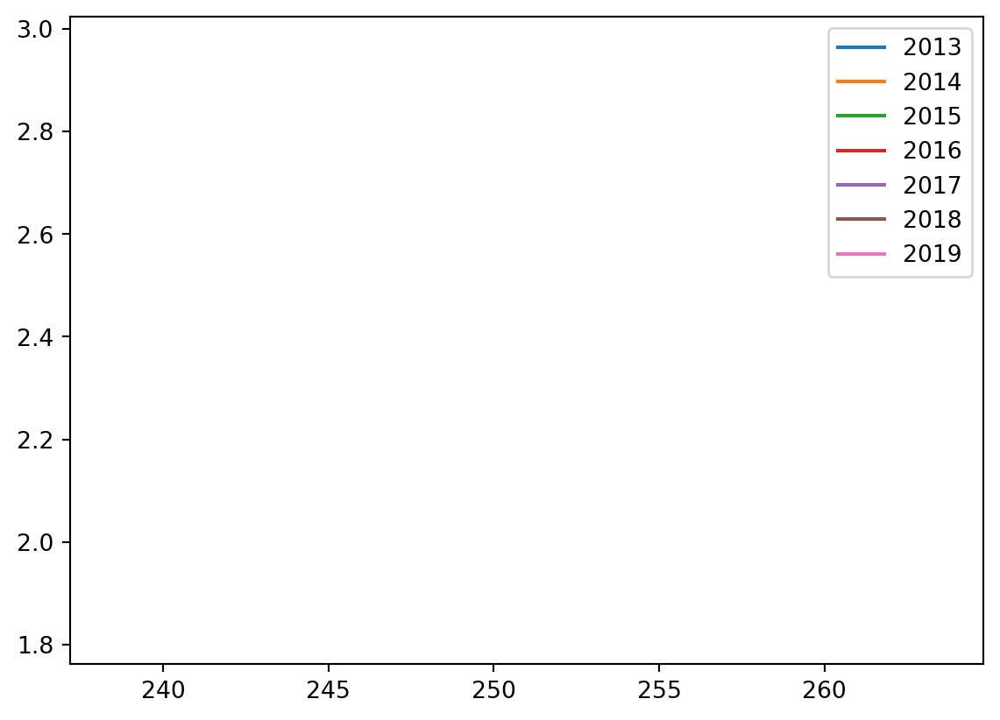
En cuanto a estos resultados notemos dos puntos importantes:
- Por una parte, el filtrado no es tan natural como usualmente lo hacemos. De hecho resultaría imposible en este punto responder esta pregunta usando el método
querypara filtrar los años solicitados. - Además, no es posible graficar de forma directa y sencilla con el método
plotcomo ya lo hemos venido haciendo. Requeriríamos de una transformación adicional de la información para que funcione adecuadamente.
Esto se explica porque el dataset que muestra información de variación en el PIB es ANCHO. Un dataset ancho es aquel en que cada fila representa a una única entidad (en este caso un país) que no se repite en otras filas. Su utilidad radica en que esta presentación de datos es fácil de interpretar por usuarios “no analíticos”, justamente porque se puede acceder a la totalidad de la información de cada entidad de forma rápida y directa en un solo registro.
Sin embargo, para usuarios “analíticos” como nosotros esta presentación no es adecuada, pues nosotros queremos tablas LARGAS. En una tabla larga cada fila representa una observación (o lo que es lo mismo un dato) con sus diferentes variables y particularidades, facilitando en consecuencia la manipulación y visualización de información.
NotaTablas largas y ordenadas
Para una discusión más académica y conceptual respecto a la importancia de tablas largas en el análisis de datos y la estadística te sugiero que revises este artículo de Hadley Wickham publicado en el Journal of Statistical Software de agosto de 2014.
Visto todo esto, define tu plan de acción para preparar estos datos.
TipPlan de acción para preparación de datos
| Problema detectado | Acción planificada |
|---|---|
| Las tablas de indicadores macroeconómicos presentan un formato ancho. | Transformar su presentación para que sean tablas largas que permitan su uso analítico. |
| Los nombres de las columnas en estas tablas presentan mayúsculas y espacios. | Cambiar los nombres de las columnas a formato snake_case. |
| Estas tablas además presentan valores ausentes que dado el contexto, puede que respondan a diferentes situaciones dependiendo del país al cual se corresponden (p. ej., países que no remiten información al Banco Mundial o países que en unos pocos años no remitieron datos). | Tomar una decisión sobre cómo tratarlos una vez que sea posible filtrar esta información fácilmente en tablas largas. |
| Existen 5 datasets distintos, todos con información relevante. | Unir todos los datasets en una única tabla consolidada a fin de no depender de diferentes fuentes durante el análisis. |
Preparación de datos
Vamos a empezar con la tabla que tiene información de la variación del PIB. Transforma la presentación ancha de este dataset a una de tipo largo, aplicando el método melt de tal forma que se genere un nuevo dataframe de 3 columnas: Country Code, year y value.
# Transformar a presentación larga con método melt
df_pib = df_pib.melt(
id_vars = "Country Code",
var_name = "year",
value_name = "value"
)
fun_diagnostico(df_pib)ESTRUCTURA GENERAL DE LA TABLA:
<class 'pandas.core.frame.DataFrame'>
RangeIndex: 6360 entries, 0 to 6359
Data columns (total 3 columns):
# Column Non-Null Count Dtype
--- ------ -------------- -----
0 Country Code 6360 non-null object
1 year 6360 non-null object
2 value 6051 non-null float64
dtypes: float64(1), object(2)
memory usage: 149.2+ KB
MUESTRA DE LOS DATOS:
Country Code year value
2121 AFE 2008 4.371098
6083 VCT 2022 7.159833
4992 SVN 2018 4.454366
5555 VGB 2020 NaN
6258 MNG 2023 7.022992
FILAS DUPLICADAS: 0
NotaLa función wide_to_long
Se debe señalar que igualmente se puede utilizar también la función wide_to_long tal y como se muestra a continuación:
df_pib = pd.wide_to_long(
df_pib,
stubnames = "",
i = "Country Code",
j = "year"
).reset_index()
df_pib = df_pib.rename(columns = {"":"value"})Te sugiero que investigues sobre su funcionalidad en la documentación de Pandas.
Ajusta los nombres de las columnas para que estos sigan el formato snake_case.
df_pib.columns = [x.lower().replace(" ", "_") for x in df_pib.columns]
fun_diagnostico(df_pib)ESTRUCTURA GENERAL DE LA TABLA:
<class 'pandas.core.frame.DataFrame'>
RangeIndex: 6360 entries, 0 to 6359
Data columns (total 3 columns):
# Column Non-Null Count Dtype
--- ------ -------------- -----
0 country_code 6360 non-null object
1 year 6360 non-null object
2 value 6051 non-null float64
dtypes: float64(1), object(2)
memory usage: 149.2+ KB
MUESTRA DE LOS DATOS:
country_code year value
2121 AFE 2008 4.371098
6083 VCT 2022 7.159833
4992 SVN 2018 4.454366
5555 VGB 2020 NaN
6258 MNG 2023 7.022992
FILAS DUPLICADAS: 0Ya podemos diagnosticar de mejor manera los valores perdidos con esta tabla larga. Identifica diferentes tipologías de países en función de cuántos valores ausentes tengan replicando el siguiente código:
casos_perdidos = (
df_pib[df_pib["value"].isna()]
.groupby("country_code")
.agg(casos = ("country_code","count"))
.sort_values(by = "casos", ascending = False)
)
casos_perdidos.plot(
kind = "bar",
figsize = [7,4],
legend = None,
ylabel = "Años perdidos",
xlabel = "Código de país"
)
plt.grid(axis = "y")
plt.show()casos_perdidos = (
df_pib[df_pib["value"].isna()]
.groupby("country_code")
.agg(casos = ("country_code", "count"))
.sort_values(by = "casos", ascending = False)
)
casos_perdidos.plot(
kind = "bar",
figsize = [7,4],
legend = None,
ylabel = "Años perdidos",
xlabel = "Código de país"
)
plt.grid(axis = "y")
plt.show()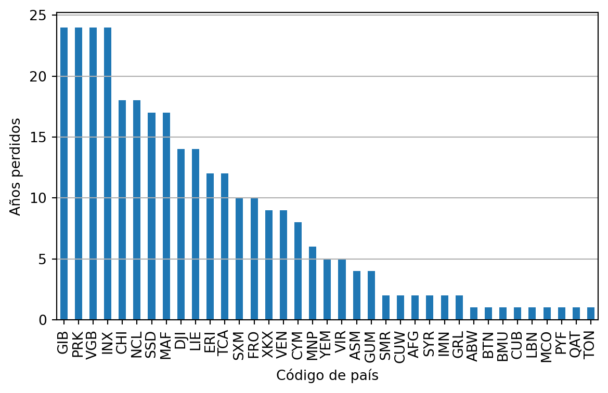
Visto esto, podríamos dividir a los países en 2 grupos en base a sus valores ausentes y aplicando de forma simplificada la Ley de Pareto:
- Aquellos que tienen 5 o menos años con valores perdidos.
- El resto que posee más de 5 años con valores perdidos.
Para el último caso que correspondería a los países con pocos o ningún dato relevante, elimina todos estos registros pues su información está limitada pudiendo distorsionar los análisis.
paises_eliminar = list(casos_perdidos.query("casos > 5").index)
df_pib = df_pib[~df_pib["country_code"].isin(paises_eliminar)]
fun_diagnostico(df_pib)ESTRUCTURA GENERAL DE LA TABLA:
<class 'pandas.core.frame.DataFrame'>
Index: 5928 entries, 0 to 6359
Data columns (total 3 columns):
# Column Non-Null Count Dtype
--- ------ -------------- -----
0 country_code 5928 non-null object
1 year 5928 non-null object
2 value 5889 non-null float64
dtypes: float64(1), object(2)
memory usage: 185.2+ KB
MUESTRA DE LOS DATOS:
country_code year value
6074 TUR 2022 5.533469
1894 CHL 2007 5.168231
2742 GTM 2010 2.884175
1045 URY 2003 0.805284
1971 ITA 2007 1.487073
FILAS DUPLICADAS: 0Para el primer caso, en donde existen muchos datos relevantes, aplica una imputación por el valor mediano de dicho país considerando que esto no alterará significativamente los resultados de los análisis.
# Obtener la mediana por país
med_por_pais = (
df_pib
.groupby("country_code")
.agg(med = ("value", "median"))
.reset_index()
)
# Incluir de forma temporal la mediana en el dataset
df_pib = df_pib.merge(
med_por_pais,
on = "country_code"
)
# Imputar la mediana en los casos perdidos correspondientes
df_pib["value"] = df_pib["value"].fillna(df_pib["med"])
# Quitar columna de mediana
df_pib = df_pib.drop(columns = "med")
fun_diagnostico(df_pib)ESTRUCTURA GENERAL DE LA TABLA:
<class 'pandas.core.frame.DataFrame'>
RangeIndex: 5928 entries, 0 to 5927
Data columns (total 3 columns):
# Column Non-Null Count Dtype
--- ------ -------------- -----
0 country_code 5928 non-null object
1 year 5928 non-null object
2 value 5928 non-null float64
dtypes: float64(1), object(2)
memory usage: 139.1+ KB
MUESTRA DE LOS DATOS:
country_code year value
5663 TUR 2022 5.533469
1767 CHL 2007 5.168231
2556 GTM 2010 2.884175
976 URY 2003 0.805284
1838 ITA 2007 1.487073
FILAS DUPLICADAS: 0
NotaTratamiento de valores perdidos
La decisión acerca del tratamiento de valores perdidos no es una regla fija e inmutable, siempre tiene que hacerse tomando en consideración tres criterios fundamentales:
- El contexto del caso de estudio que se esté realizando.
- La cantidad de valores perdidos en relación al total de datos existentes.
- La lógica y el pragmatismo del analista.
Concluye ejecutando los siguientes procedimientos de limpieza adicionales, los cuales han surgido de los procedimientos realizados en los pasos previos:
- Cambiar el tipo de variable de year a entero.
- Cambiar el nombre de la columna value a algo más coherente con el contexto como var_pib.
# Cambiar el tipo de variable de year
df_pib["year"] = df_pib["year"].astype(int)
# Cambiar el nombre de la columna "value"
df_pib = df_pib.rename(columns = {"value":"var_pib"})
fun_diagnostico(df_pib)ESTRUCTURA GENERAL DE LA TABLA:
<class 'pandas.core.frame.DataFrame'>
RangeIndex: 5928 entries, 0 to 5927
Data columns (total 3 columns):
# Column Non-Null Count Dtype
--- ------ -------------- -----
0 country_code 5928 non-null object
1 year 5928 non-null int64
2 var_pib 5928 non-null float64
dtypes: float64(1), int64(1), object(1)
memory usage: 139.1+ KB
MUESTRA DE LOS DATOS:
country_code year var_pib
5663 TUR 2022 5.533469
1767 CHL 2007 5.168231
2556 GTM 2010 2.884175
976 URY 2003 0.805284
1838 ITA 2007 1.487073
FILAS DUPLICADAS: 0Ahora bien, considera que esta limpieza debe repetirse exactamente igual en los otros datasets con indicadores macroeconómicos. Por lo tanto, automatiza el proceso mediante la definición de una función que reciba como entradas una tabla y un nombre de variable adecuado, y devuelva un dataframe completamente limpio siguiendo todos los pasos realizados en los pasos precedentes.
# Crear una función que permita automatizar el procedimiento de limpieza
def fun_procesamiento(df, nombre_col):
# Transformar a tabla larga
df = df.melt(
id_vars = "Country Code",
var_name = "year",
value_name = "value"
)
# Ajustar nombres de columnas a snake_case
df.columns = [x.lower().replace(" ", "_") for x in df.columns]
# Suprimir países con muchos valores perdidos
casos_perdidos = (
df[df["value"].isna()]
.groupby("country_code")
.agg(casos = ("country_code", "count"))
.sort_values(by = "casos", ascending = False)
)
paises_eliminar = list(casos_perdidos.query("casos > 5").index)
df = df[~df["country_code"].isin(paises_eliminar)]
# Imputar mediana a valores perdidos de resto de países
med_por_pais = (
df
.groupby("country_code")
.agg(med = ("value", "median"))
.reset_index()
)
df = df.merge(
med_por_pais,
on = "country_code",
)
df["value"] = df["value"].fillna(df["med"])
df = df.drop(columns = "med")
# Convertir columna year a entero
df["year"] = df["year"].astype(int)
# Cambiar nombre de columna del indicador
df = df.rename(columns = {"value":nombre_col})
return dfCon esta función realiza la limpieza de las demás tablas con indicadores macroeconómicos.
# Aplicar función en df_ahorro
df_ahorro = fun_procesamiento(df_ahorro, "ahorro")
fun_diagnostico(df_ahorro)ESTRUCTURA GENERAL DE LA TABLA:
<class 'pandas.core.frame.DataFrame'>
RangeIndex: 3936 entries, 0 to 3935
Data columns (total 3 columns):
# Column Non-Null Count Dtype
--- ------ -------------- -----
0 country_code 3936 non-null object
1 year 3936 non-null int64
2 ahorro 3936 non-null float64
dtypes: float64(1), int64(1), object(1)
memory usage: 92.4+ KB
MUESTRA DE LOS DATOS:
country_code year ahorro
3764 UKR 2022 16.416376
3134 BLZ 2019 20.049655
1850 EMU 2011 22.548542
1144 UZB 2006 37.454772
1522 EMU 2009 21.191308
FILAS DUPLICADAS: 0# Aplicar función en df_poblacion
df_poblacion = fun_procesamiento(df_poblacion, "var_pob")
fun_diagnostico(df_poblacion)ESTRUCTURA GENERAL DE LA TABLA:
<class 'pandas.core.frame.DataFrame'>
RangeIndex: 6336 entries, 0 to 6335
Data columns (total 3 columns):
# Column Non-Null Count Dtype
--- ------ -------------- -----
0 country_code 6336 non-null object
1 year 6336 non-null int64
2 var_pob 6336 non-null float64
dtypes: float64(1), int64(1), object(1)
memory usage: 148.6+ KB
MUESTRA DE LOS DATOS:
country_code year var_pob
1370 CUB 2005 0.185302
5504 SXM 2020 1.755089
2211 HRV 2008 -0.011879
540 ATG 2002 1.277639
1317 ZAF 2004 0.935290
FILAS DUPLICADAS: 0# Aplicar función en df_urbana
df_urbana = fun_procesamiento(df_urbana, "pct_urbana")
fun_diagnostico(df_urbana)ESTRUCTURA GENERAL DE LA TABLA:
<class 'pandas.core.frame.DataFrame'>
RangeIndex: 6288 entries, 0 to 6287
Data columns (total 3 columns):
# Column Non-Null Count Dtype
--- ------ -------------- -----
0 country_code 6288 non-null object
1 year 6288 non-null int64
2 pct_urbana 6288 non-null float64
dtypes: float64(1), int64(1), object(1)
memory usage: 147.5+ KB
MUESTRA DE LOS DATOS:
country_code year pct_urbana
5401 MNG 2020 68.657000
655 LBY 2002 76.629000
3820 MEX 2014 78.993000
1929 HIC 2007 77.986993
3319 NOR 2012 79.874000
FILAS DUPLICADAS: 0Consolida la información de estos 4 datasets de indicadores macroeconómicos en una sola tabla de tal forma que se garantice que no existan nuevos valores ausentes en ningún indicador.
df_consolidado = (
df_pib
.merge(
df_ahorro,
on = ["country_code", "year"],
how = "inner"
)
.merge(
df_poblacion,
on = ["country_code", "year"],
how = "inner"
)
.merge(
df_urbana,
on = ["country_code", "year"],
how = "inner"
)
)
fun_diagnostico(df_consolidado)ESTRUCTURA GENERAL DE LA TABLA:
<class 'pandas.core.frame.DataFrame'>
RangeIndex: 3936 entries, 0 to 3935
Data columns (total 6 columns):
# Column Non-Null Count Dtype
--- ------ -------------- -----
0 country_code 3936 non-null object
1 year 3936 non-null int64
2 var_pib 3936 non-null float64
3 ahorro 3936 non-null float64
4 var_pob 3936 non-null float64
5 pct_urbana 3936 non-null float64
dtypes: float64(4), int64(1), object(1)
memory usage: 184.6+ KB
MUESTRA DE LOS DATOS:
country_code year var_pib ahorro var_pob pct_urbana
3764 UKR 2022 -28.758591 16.416376 -14.316543 69.919000
3134 BLZ 2019 4.236235 20.049655 1.823016 45.866000
1850 EMU 2011 1.714597 22.548542 -0.218546 75.254199
1144 UZB 2006 7.451418 37.454772 1.220216 49.021000
1522 EMU 2009 -4.534148 21.191308 0.319797 74.796354
FILAS DUPLICADAS: 0Incorpora ahora en esta información el nombre de los países garantizando nuevamente que no existan valores perdidos en ninguna columna.
df_consolidado = cat_pais.merge(
df_consolidado,
on = "country_code",
how = "inner"
)
fun_diagnostico(df_consolidado)ESTRUCTURA GENERAL DE LA TABLA:
<class 'pandas.core.frame.DataFrame'>
RangeIndex: 3144 entries, 0 to 3143
Data columns (total 7 columns):
# Column Non-Null Count Dtype
--- ------ -------------- -----
0 country_code 3144 non-null object
1 country_name 3144 non-null object
2 year 3144 non-null int64
3 var_pib 3144 non-null float64
4 ahorro 3144 non-null float64
5 var_pob 3144 non-null float64
6 pct_urbana 3144 non-null float64
dtypes: float64(4), int64(1), object(2)
memory usage: 172.1+ KB
MUESTRA DE LOS DATOS:
country_code country_name year var_pib ahorro var_pob
723 CRI Costa Rica 2003 4.317180 13.413768 1.587933
952 ESP Espana 2016 3.037774 21.919998 0.084430
2323 PAN Panama 2019 3.281875 30.933837 1.602290
1979 MLI Mali 2011 3.213134 14.297908 3.234812
3123 ZAF Sudafrica 2003 2.949075 18.385602 0.924209
FILAS DUPLICADAS: 0Análisis exploratorio de datos
Como ya se mencionó, el EDA busca estudiar el comportamiento de indicadores concretos mediante la aplicación de técnicas estadísticas y visualización. En este sentido conviene recordar que la principal métrica de interés en el contexto de este caso es la variación del PIB, ante la cual se han planteado las siguientes preguntas:
- ¿Cuál ha sido el comportamiento de este indicador en el nuevo siglo?
- ¿Qué variables inciden principalmente en los cambios a nivel de este indicador?
- ¿Qué tan probable es que un país tenga una recesión en un año cualquiera?
- ¿Existen diferencias significativas en el crecimiento de países de “bajo desarrollo” frente a países de “alto desarrollo”?
Procedamos entonces contestando a las mismas una a una.
¿Cuál ha sido el comportamiento de la variación en el PIB mundial en el nuevo siglo?
Estudia la distribución del indicador mediante un resumen estadístico. Recuerda que la distribución de una variable hace referencia a sus siguientes características fundamentales:
- Su nivel de centralidad.
- Su grado de dispersión o variabilidad.
- La existencia de valores atípicos.
- La existencia de sesgos.
# Agregar información a nivel mundial
pib_mundial = (
df_consolidado
.groupby("year")
.agg(var_pib = ("var_pib", "mean"))
)
# Generar resumen estadístico
pib_mundial["var_pib"].describe().round(2)count 24.00
mean 3.44
std 2.29
min -4.77
25% 3.03
50% 3.57
75% 4.42
max 7.18
Name: var_pib, dtype: float64En este resumen estadístico se evidencian distintas métricas que nos ayudan a comprender el comportamiento de la distribución de la variable. En concreto se nos muestra lo siguiente:
- La media aritmética (mean) y la mediana (50%) que constituyen medidas de centralidad de los datos al ser valores típicos de la variable.
- La desviación estándar (std) que mide la dispersión al representar la distancia promedio de cada observación respecto a su media aritmética.
- La existencia de valores atípicos no se visualiza directamente pero podría inferirse mediante operaciones simples con algunos de estos resultados. Notemos que la diferencia entre el valor mínimo (min) y el primer cuartil (25%) es de 7.8 unidades. Y la diferencia entre el tercer cuartil (75%) y el máximo (max) es de 2.76; dado que la primera diferencia es mayor que la segunda, existiría evidencia de que existen valores atípicos de magnitud pequeña.
- En cuanto al sesgo igualmente no se tiene una representación directa, pero igualmente hay mecanismos simples de inferencia. Por ejemplo, notemos que la diferencia entre el primer cuartil y la mediana es de 0.54, mientras que la resta entre mediana y tercer cuartil da un valor de 0.85. Dado que este último resultado es mayor, se cuenta con evidencia para indicar que existe un sesgo positivo (hacia valores altos).
Si bien las medidas de centralidad son relativamente sencillas en cuanto a su interpretación, el resto resultan un tanto más complejas y por ello vamos a mostrar algunas formas distintas de visualizarlas y comprenderlas mejor.
Para empezar con la dispersión y la desviación estándar, calcula en primera instancia el denominado coeficiente de variación dividiendo la mencionada desviación estándar por la media aritmética de la variable estudiada.
cv = pib_mundial["var_pib"].std() / pib_mundial["var_pib"].mean()
print(f"Coeficiente de variación: {cv:.1%}")Coeficiente de variación: 66.6%Este resultado nos dice que en promedio los datos se encuentran a una distancia de aproximadamente 67% de su valor central. Aun cuando no existe una regla generalmente aceptada, si el coeficiente de variación es menor a 50% se habla de una dispersión baja, si se encuentra entre 50% y 100% se considera una dispersión moderada, y sobre el 100% la dispersión sería alta.
Para complementar lo anterior, utiliza ahora el criterio 3-sigma para establecer el rango de comportamiento esperado de la variación del PIB. Recuerda que este criterio establece que con un 99% de confianza, una variable \(x\) se encontrará en el rango
\[ [\bar x - 3\sigma_x,\; \bar x + 3\sigma_x] \]
donde \(\bar x\) corresponde a la media de la variable, y \(\sigma_x\) a su desviación estándar.
lim_inf = pib_mundial["var_pib"].mean() - 3 * pib_mundial["var_pib"].std()
lim_sup = pib_mundial["var_pib"].mean() + 3 * pib_mundial["var_pib"].std()
print(f"Con un 99% de confianza, la variación mundial del PIB estará entre {lim_inf:.1f}% y {lim_sup:.1f}%.")Con un 99% de confianza, la variación mundial del PIB estará entre -3.4% y 10.3%.Si bien el rango encontrado es por decirlo de alguna manera “pequeño”, el hecho de que la variación en el PIB mundial pueda encontrarse entre un porcentaje negativo y uno positivo (y significativo) complementa el argumento de que existe al menos cierto grado de volatilidad en esta variable.
Continuemos ahora con el estudio de la distribución incorporando gráficos descriptivos. Para empezar, crea un diagrama de cajón con bigotes utilizando el método plot con el argumento kind = "box".
pib_mundial.plot(
kind = "box",
y = "var_pib",
vert = False,
widths = 0.5,
figsize = [6, 4],
title = "Cajón para variación anual del PIB"
)
plt.grid(axis = "x", linestyle = ":")
plt.yticks(ticks = [1], labels = [""])
plt.show()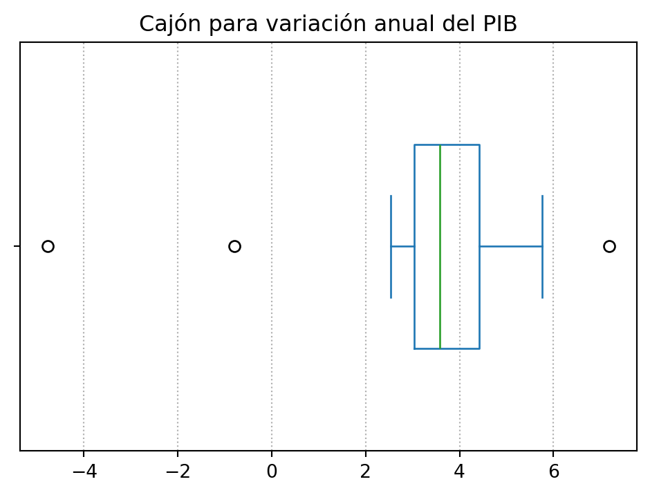
En esta visualización es posible apreciar lo siguiente:
- El “cajón” representa la ubicación del 50% de los datos centrales de la variable estudiada. En este sentido, su límite inferior corresponde al primer cuartil y su límite superior al tercero.
- La línea dentro del cajón se corresponde con la mediana de los datos.
- Los “bigotes” muestran las ubicaciones de aquellos datos considerados “bajos” o “altos” aunque no por ello atípicos.
- Los “puntos” son aquellos casos considerados atípicos.
Dado que se observan valores atípicos que dificultan la visualización de la distribución, repite el gráfico excluyendo los mismos con el argumento showfliers = False.
pib_mundial.plot(
kind = "box",
y = "var_pib",
vert = False,
widths = 0.5,
figsize = [6, 4],
title = "Cajón para variación del PIB | s/atípicos",
showfliers = False
)
plt.grid(axis = "x", linestyle = ":")
plt.yticks(ticks = [1], labels = [""])
plt.show()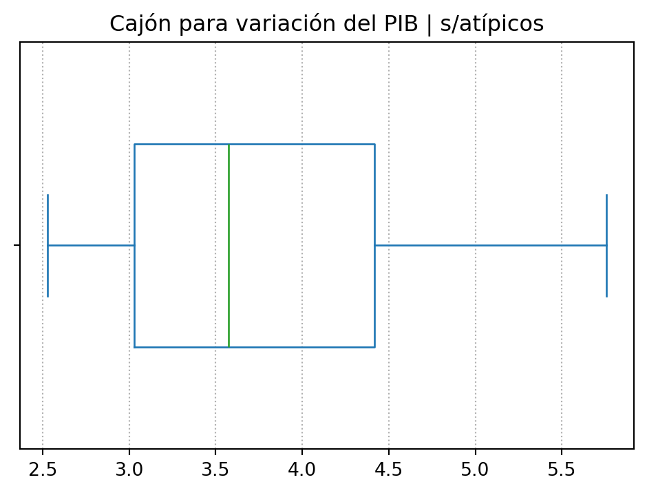
Vale señalar que un valor se considera atípico si el mismo NO se encuentra dentro del intervalo
\[ \left[ Q_1 - 1.5R_Q,\; Q_3 + 1.5R_Q\right]\]
donde \(Q_1\) es el primer cuartil, \(Q_3\) el tercero, y \(R_Q\) es el rango intercuartil definido por \(R_Q = Q_3 - Q_1\).
Ahora bien, si no consideramos los valores atípicos podrás notar que existe un grado de desbalanceo en el diagrama realizado, tal que la parte derecha es más “larga” que la parte izquierda. Lo anterior no es otra cosa que el sesgo de la distribución.
Complementa ahora este resultado con un histograma tal que se cumpla con lo siguiente:
- Excluye del dataset los casos atípicos aplicando la fórmula anterior.
- Utiliza en el gráfico un número de barras (\(b\)) pertinente con el argumento
bins, para lo cual puedes utilizar la fórmula \(b \approx \sqrt{n}\), donde \(n\) es el número de observaciones no atípicas.
Si empleas el método plot, incluye el argumento kind = "hist".
# Excluir valores atípicos
umbral_inf = pib_mundial["var_pib"].quantile(0.25) - 1.5 * (pib_mundial["var_pib"].quantile(0.75) - pib_mundial["var_pib"].quantile(0.25))
umbral_sup = pib_mundial["var_pib"].quantile(0.75) + 1.5 * (pib_mundial["var_pib"].quantile(0.75) - pib_mundial["var_pib"].quantile(0.25))
pib_mundial_sa = pib_mundial.query("var_pib >= @umbral_inf and var_pib <= @umbral_sup")
# Generar histograma
pib_mundial_sa.plot(
kind = "hist",
bins = int(round(np.sqrt(pib_mundial_sa.shape[0]), 0)),
y = "var_pib",
figsize = [6, 4],
legend = None,
title = "Histograma para variación del PIB | s/atípicos",
ylabel = "Frecuencia",
edgecolor = "gray",
color = "dodgerblue",
alpha = 0.75
)
plt.grid(axis = "y", linestyle = ":")
plt.show()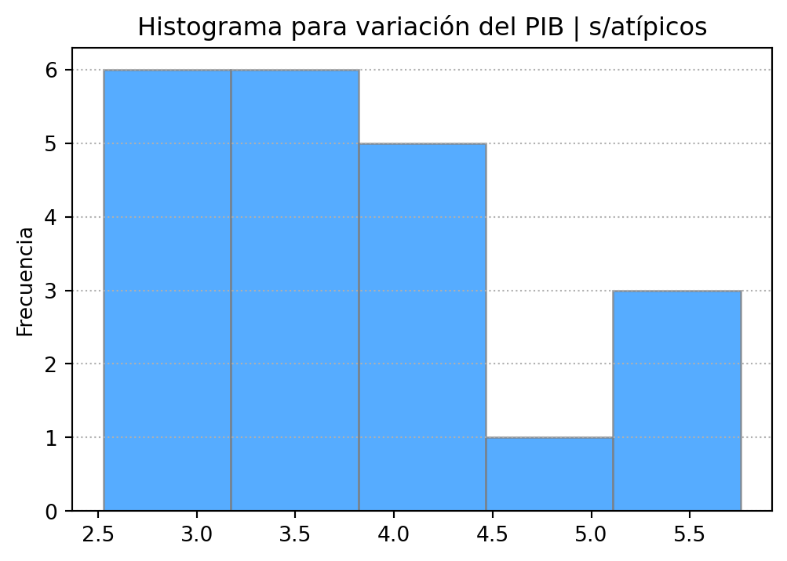
El histograma además puede resumirse en un diagrama de densidad. Créalo con el argumento kind = "density" en el método plot. Utiliza también el argumento bw_method = 0.25 para evidenciar suficientes detalles de la distribución de este indicador.
pib_mundial_sa.plot(
kind = "density",
y = "var_pib",
figsize = [6,4],
legend = None,
title = "Densidad para variación del PIB | s/atípicos",
color = "dodgerblue",
grid = True,
xlim = [pib_mundial_sa["var_pib"].min(), pib_mundial_sa["var_pib"].max()],
bw_method = 0.25
)
plt.ylabel("Densidad")
plt.show()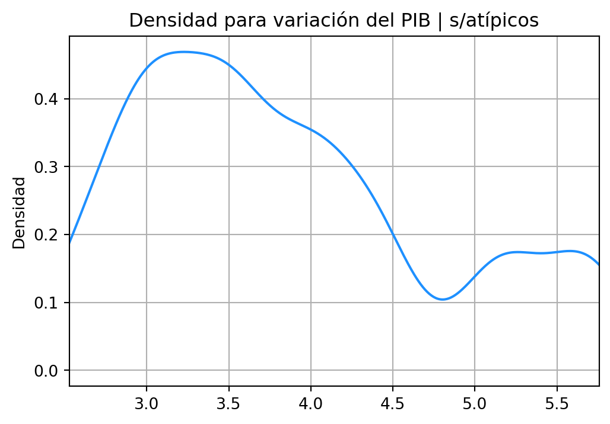
NotaEl argumento bw_method
El argumento bw_method es un controlador del nivel de detalle de un gráfico de densidad. Te sugiero que pruebes variar su valor probando las siguientes opciones y mirando lo que sucede con la visualización: 0.1, 0.5, 1.0 y 1.25.
Tanto en el histograma como en la densidad, el punto más alto observado se corresponde con la medida central de los datos denominada moda, e igualmente es factible detectar el sesgo de la distribución visto que existen valores de variación en el PIB significativamente más altos que este punto medio, mientras que hacia el otro lado no se aprecia esta particularidad.
A modo de complemento, genera un gráfico con la evolución a través de los años de la variación en el PIB promedio mundial (incluyendo los años atípicos). Esta visualización resulta importante especialmente cuando queremos estudiar el comportamiento de variables a través del tiempo, y profundizaremos en este estudio posteriormente cuando las tratemos como Series Temporales.
pib_mundial.plot(
figsize = [10,4],
legend = None,
marker = "*",
xticks = range(2000,2024),
rot = 90,
grid = True,
title = "Evolución anual de la variación del PIB | Promedio mundial",
xlabel = "",
ylabel = "%",
color = "gray"
)
plt.axhline(y = 0, color = "tomato")
plt.axhline(
y = pib_mundial_sa["var_pib"].mean(),
color = "dodgerblue",
linestyle = "--"
)
plt.show()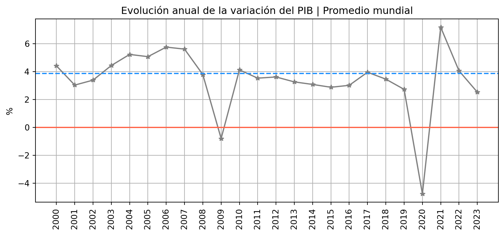
Extrae conclusiones relevantes respecto al comportamiento observado del indicador.
TipConclusiones
| # | Conclusión |
|---|---|
| 1 | El promedio de variación del PIB mundial durante el nuevo siglo se ubica entre 3% y 4%, esto es, los estados han gozado en general de crecimiento y desarrollo económico. Sin embargo, se evidencia también una volatilidad significativa producto de eventos específicos. En concreto, la crisis subprime del año 2009 conllevó un deterioro a nivel mundial en cuanto al crecimiento y desarrollo económico. Así también, se evidencian efectos derivados de la pandemia del COVID en el año 2020, en el cual hubo una contracción de más de 4 puntos porcentuales respecto al promedio histórico. |
¿Qué variables inciden principalmente en los cambios a nivel de la variación en el PIB?
Antes de contestar esta pregunta, excluye del dataset consolidado los años 2009 y 2020 por ser especiales en cuanto a la situación mundial vivida durante esos períodos.
per_excluir = [2009, 2020]
df_consolidado = df_consolidado.query("year != @per_excluir")Estudia el grado de correlación existente entre las distintas métricas que tienes disponibles con el método corr. Visto que no conocemos si esta relación es lineal o no, incorpora el argumento method = "spearman".
mat_corr = df_consolidado[["var_pib", "ahorro", "var_pob", "pct_urbana"]].corr(method = "spearman")
print(mat_corr.round(4)) var_pib ahorro var_pob pct_urbana
var_pib 1.0000 0.1456 0.1384 -0.2207
ahorro 0.1456 1.0000 -0.0299 0.2235
var_pob 0.1384 -0.0299 1.0000 -0.2725
pct_urbana -0.2207 0.2235 -0.2725 1.0000Recuerda que la correlación mide el grado de vinculación entre un par de variables, tal que:
- Si su valor es cercano a -1, se dice que ambas variables mantienen una relación inversamente proporcional, esto es, cuando una se incrementa la otra disminuye.
- Si su valor es cercano a +1, se dice que ambas variables mantienen una relación directamente proporcional, esto es, cuando una se incrementa la otra igualmente aumenta.
- Si su valor es cercano a 0, se dice que ambas variables no tienen relación estadística alguna.
NotaCorrelación lineal y de Spearman
Una relación lineal entre dos variables \(x\) e \(y\) existe si es que se cumple que
\[ y = f(x) \approx w_0 + w_1\times x \]
donde \(w_0\) y \(w_1\) son pesos o coeficientes constantes.
Si tenemos evidencia de que existe este tipo de relación entonces el método de correlación a utilizar es el de pearson. Te sugiero que investigues sobre la diferencia existente entre el usado en este caso y el mencionado de Pearson.
Ante esto, repite el cálculo pero ahora utiliza los promedios anuales de cada indicador a fin de “diluir” los efectos exógenos de cada país que pueden estar alterando los niveles del estadístico. Igualmente excluye los casos atípicos definidos en la pregunta anterior.
# Agregar datos por año
prom_anuales = df_consolidado.groupby("year")[["var_pib", "ahorro", "var_pob", "pct_urbana"]].mean()
prom_anuales_sa = prom_anuales.query("var_pib >= @umbral_inf and var_pib <= @umbral_sup")
# Calcular matriz de correlación
mat_corr = prom_anuales_sa[["var_pib", "ahorro", "var_pob", "pct_urbana"]].corr(method = "spearman")
print(mat_corr.round(4)) var_pib ahorro var_pob pct_urbana
var_pib 1.0000 0.5364 0.2662 -0.5286
ahorro 0.5364 1.0000 0.0299 0.1961
var_pob 0.2662 0.0299 1.0000 -0.4779
pct_urbana -0.5286 0.1961 -0.4779 1.0000Si solamente nos enfocamos en los niveles de correlación asociados a la variación en el PIB podemos notar que existe cierto grado de incidencia positivo de este indicador con el nivel de ahorro. También existe una relación de incidencia negativa con el porcentaje de población urbana.
Visualiza entonces la relación existente entre ahorro y var_pib mediante una gráfica de dispersión. Incluye una línea de ajuste simple con la función np.polyfit.
# Generar línea de ajuste simple
lin_fit = np.polyfit(
x = prom_anuales_sa["ahorro"],
y = prom_anuales_sa["var_pib"],
deg = 1
)
# Generar gráfico de dispersión
prom_anuales_sa.plot(
kind = "scatter",
x = "ahorro",
y = "var_pib",
figsize = [6,4],
color = "dodgerblue",
alpha = 0.75,
grid = True,
s = 50,
title = "Var. en PIB vs. nivel de ahorro | Promedio mundial",
xlabel = "% Ahorro",
ylabel = "Var. en PIB",
xlim = [prom_anuales_sa["ahorro"].min() - 1, prom_anuales_sa["ahorro"].max() + 1],
ylim = [prom_anuales_sa["var_pib"].min() - 1, prom_anuales_sa["var_pib"].max() + 1]
)
plt.axline(xy1 = [0, lin_fit[1]], slope = lin_fit[0], color = "tomato", linestyle = ":")
plt.show()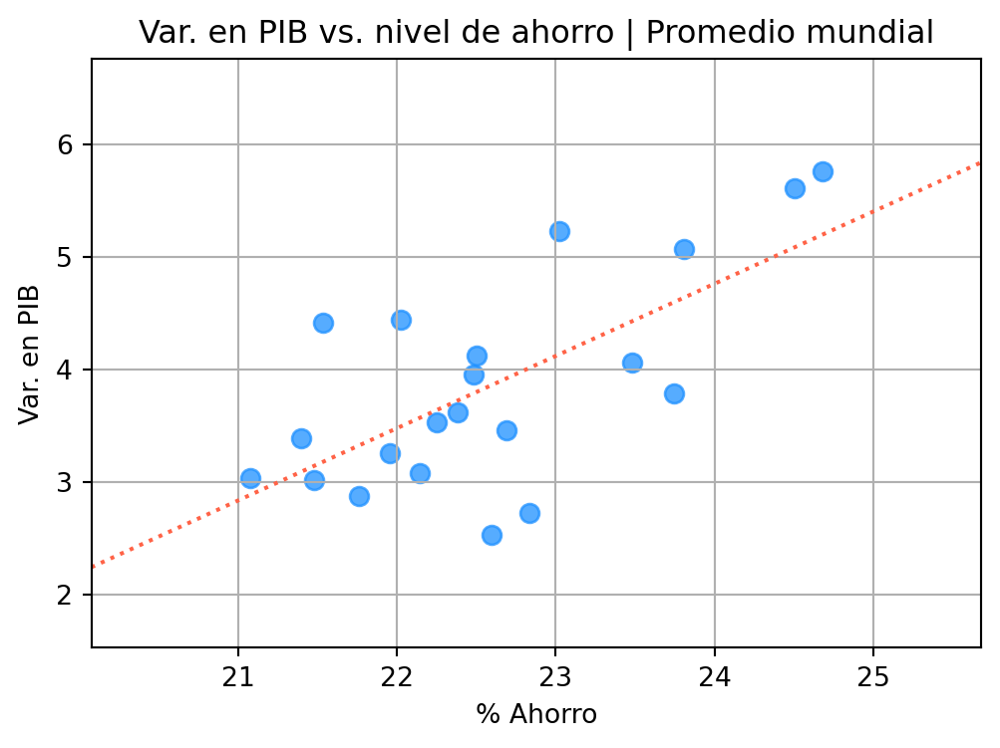
Visualiza ahora la relación existente entre pct_urbana y var_pib mediante una gráfica de dispersión e igualmente incluye una línea de ajuste.
# Generar línea de ajuste simple
lin_fit = np.polyfit(
x = prom_anuales_sa["pct_urbana"],
y = prom_anuales_sa["var_pib"],
deg = 1
)
# Generar gráfico de dispersión
prom_anuales_sa.plot(
kind = "scatter",
x = "pct_urbana",
y = "var_pib",
figsize = [6,4],
color = "dodgerblue",
alpha = 0.75,
grid = True,
s = 50,
title = "Var. en PIB vs. % de población urbana | Promedio mundial",
xlabel = "% Población urbana",
ylabel = "Var. en PIB",
xlim = [prom_anuales_sa["pct_urbana"].min() - 1, prom_anuales_sa["pct_urbana"].max() + 1],
ylim = [prom_anuales_sa["var_pib"].min() - 1, prom_anuales_sa["var_pib"].max() + 1]
)
plt.axline(xy1 = [0, lin_fit[1]], slope = lin_fit[0], color = "tomato", linestyle = ":")
plt.show()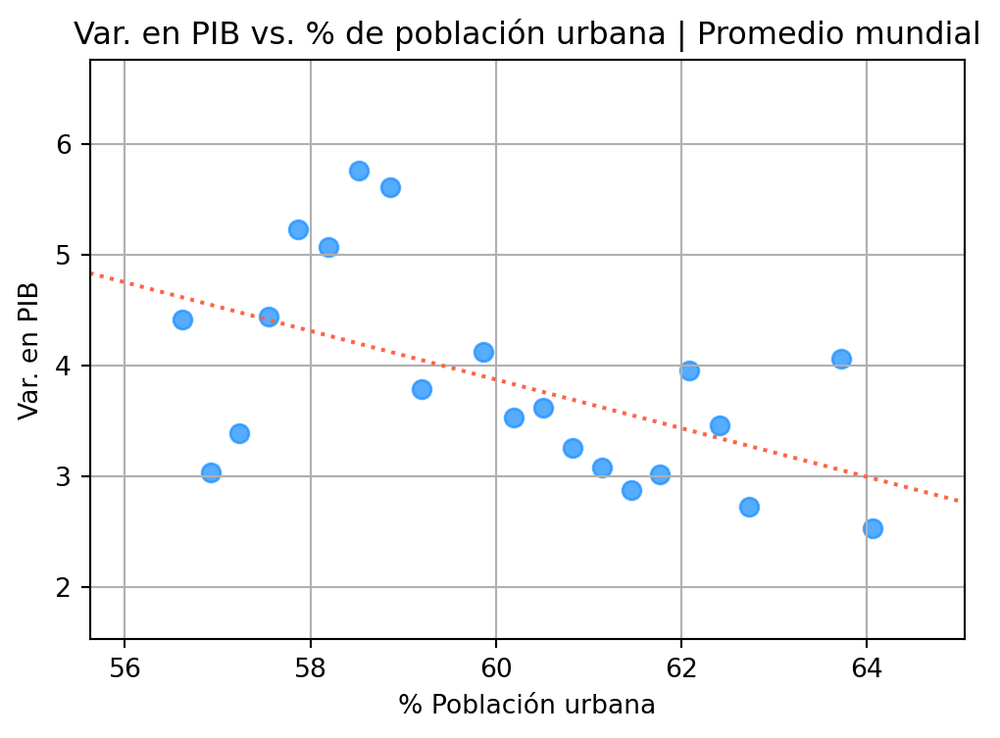
NotaSuavizamiento mediante promedios
En estas secciones hemos empleado una estrategia de “suavizamiento” de nuestros datos mediante el uso del promedio de indicadores por año, lo que nos ha permitido evidenciar de mejor manera dinámicas y comportamientos de variables. Esta técnica será de mucha utilidad cuando estudies Series Temporales o apliques capas convolucionales en modelos predictivos con Redes Neuronales.
NotaOtras medidas de asociación
Las correlaciones de Pearson y de Spearman que hemos empleado aquí son útiles para evaluar relaciones entre variables siempre que las mismas sean de tipo numérico. Sin embargo, no hacen sentido cuando queremos estudiar la dinámica entre datos de diferente tipo.
Te sugiero investigar qué otras medidas estadísticas pueden ser útiles en otras circunstancias.
Establece las conclusiones pertinentes de este análisis de correlación.
TipConclusiones
| # | Conclusión |
|---|---|
| 1 | Si bien a nivel de cada país no se evidencia que ningún indicador tiene una relación significativa con los cambios en el PIB (lo cual estaría asociado al grado de volatilidad observado por las diversas condiciones socioeconómicas y factores exógenos de cada estado), a nivel promedio se podría afirmar que un mayor ahorro de la población conlleva mejores niveles de crecimiento económico producto de una mayor capacidad financiera para la generación de capital y consumo futuro. |
| 2 | En esta línea, en el promedio mundial se evidencia una relación negativa entre el porcentaje de población urbana y variación en el PIB, lo cual da cuenta posiblemente de mayores potenciales de desarrollo en estados con alta incidencia agrícola y extractiva. Lo anterior no sugiere que países con estas características sean más desarrollados que su contraparte, sino que los cambios observados a nivel de PIB son más grandes en términos porcentuales. |
¿Qué tan probable es que un país tenga una recesión en un año cualquiera?
Crea una nueva columna en el dataset consolidado que sea de tipo booleano y que permita evidenciar aquellas observaciones en las que han existido recesiones. Para simplificar este concepto asumamos que una recesión es una variación negativa del PIB.
df_consolidado["es_recesion"] = df_consolidado["var_pib"].apply(lambda x: True if x < 0 else False)
df_consolidado["es_recesion"].value_counts()es_recesion
False 2643
True 239
Name: count, dtype: int64Calcula en cuántos casos del dataset han existido recesiones y guarda este resultado en una variable llamada casos_exitosos.
casos_exitosos = df_consolidado["es_recesion"].sum()
print(f"Observaciones con recesión: {casos_exitosos:,.0f}")Observaciones con recesión: 239Guarda la totalidad de casos posibles en la variable casos_totales.
casos_totales = df_consolidado["es_recesion"].count()
print(f"Observaciones totales: {casos_totales:,.0f}")Observaciones totales: 2,882Calcula la probabilidad de que en un año cualquiera un país se encuentre en recesión. Recuerda que una probabilidad se mide como la razón entre los casos de éxito (eventos en los que sucede algo que estamos queriendo medir) y los casos totales observados.
prob_recesion = casos_exitosos / casos_totales
print(f"La probabilidad de que un país tenga una recesión en un año cualquiera es de: {prob_recesion:.1%}")La probabilidad de que un país tenga una recesión en un año cualquiera es de: 8.3%La probabilidad es una medida que nos ayuda a estimar cuantitativamente la incertidumbre asociada a eventos que suceden en el mundo real. La misma debe cumplir SIEMPRE estas tres condiciones:
- Ser cero o positiva, es decir, todo evento puede suceder.
- Ser menor o igual a 1, es decir, potencialmente existen otros eventos posibles y complementarios.
- La suma de todas las probabilidades de eventos posibles en un contexto es igual a 1, es decir, alguno debe suceder.
NotaCálculo directo de la probabilidad
Vale que notes que esta probabilidad obtenida podría calcularse de forma directa con el siguiente código:
prob_recesion = df_consolidado["es_recesion"].mean()Piensa el porqué esto funciona.
Para complementar este resultado, encuentra el top 10 de países con una mayor probabilidad de recesión. Para esto, vuelve a repetir este cálculo agregando la información por país.
# Obtener probabilidad de recesión por país
rec_por_pais = (
df_consolidado
.groupby("country_name")
.agg(prob_recesion = ("es_recesion", "mean"))
.sort_values(by = "prob_recesion", ascending = False)
)
# Extraer 10 países con mayor probabilidad
print("TOP 10 PAÍSES CON MAYOR PROBABILIDAD DE RECESIÓN")
print(round(rec_por_pais.head(10) * 100, 1))TOP 10 PAÍSES CON MAYOR PROBABILIDAD DE RECESIÓN
prob_recesion
country_name
Libia 45.5
Argentina 40.9
Brunei Darussalam 31.8
Grecia 31.8
Haiti 31.8
Sudan 31.8
Aruba 31.8
Gambia 22.7
Paraguay 22.7
Congo, Republica del 22.7Identifica igualmente el porcentaje de países que han presentado recesiones en este período de tiempo.
# Contar países con recesión
paises_con_recesion = len(rec_por_pais.query("prob_recesion > 0"))
# Contar total de países
paises_totales = len(rec_por_pais)
print(f"Porcentaje de países con alguna recesión registrada: {paises_con_recesion / paises_totales:.1%}")Porcentaje de países con alguna recesión registrada: 61.1%
TipConclusiones
| # | Conclusión |
|---|---|
| 1 | En promedio, un año malo en términos económicos para un país cualquiera puede presentarse aproximadamente una vez por cada 12 años. En consecuencia se pueden esperar ciclos de alrededor de 10 a 11 años de crecimiento sostenido en las economías nacionales, ante lo cual las políticas de desarrollo e inversión pública y privada deberían alinearse a esta realidad observada para así garantizar que las variaciones positivas en el PIB sean las máximas posibles en estos años. |
| 2 | Entre los 10 países con mayor probabilidad de recesión resaltan aquellos en donde han existido situaciones graves en términos económicos, sociales o políticos. Por ejemplo en Libia existe una grave crisis humanitaria desde el año 2011, en Argentina se han presentado períodos de deterioro económico especialmente a principios de la década del 2000. Lo expuesto ratifica lo mencionado en cuanto al impacto de factores externos en la variación del PIB. |
| 3 | Las recesiones en este siglo son un escenario bastante común, lo anterior queda evidenciado en el hecho de que aproximadamente 60% de los países las han tenido. Es recomendable por tanto, que el Banco Mundial amplíe su espectro de apoyo a países exigiendo como garantías el cumplimiento de políticas de desarrollo. |
¿Existen diferencias en el crecimiento de países de “bajo desarrollo” frente a países de “alto desarrollo”?
Escoge 10 países que personalmente consideres de bajo desarrollo (p. ej., Ecuador, Bolivia, Guatemala, etc.), y 10 que consideres de alto desarrollo (p. ej., Estados Unidos, Alemania, Japón, etc.). Filtra el dataset de forma que solamente conserves estos países y adiciona una nueva columna que distinga a los dos grupos.
# Seleccionar países de alto y bajo desarrollo
bajo_desarrollo = ["Ecuador", "Bolivia", "Guatemala", "Madagascar", "Nepal", "Niger", "Nicaragua", "Burundi", "Mali", "Haiti"]
alto_desarrollo = ["Estados Unidos", "Alemania", "Japon", "Francia", "Canada", "Noruega", "Australia", "Singapur", "Dinamarca", "Suiza"]
paises_seleccionados = alto_desarrollo.copy()
paises_seleccionados.extend(bajo_desarrollo)
# Filtrar dataset con países seleccionados
df_filtrado = df_consolidado.query("country_name in @paises_seleccionados")
# Adicionar columna con grupos de países
df_filtrado["nivel_desarrollo"] = df_filtrado["country_name"].apply(lambda x: "Alto" if x in alto_desarrollo else "Bajo")
df_filtrado[["nivel_desarrollo", "country_name"]].value_counts().reset_index().sort_values(by = "nivel_desarrollo")| nivel_desarrollo | country_name | count | |
|---|---|---|---|
| 0 | Alto | Alemania | 22 |
| 8 | Alto | Singapur | 22 |
| 7 | Alto | Noruega | 22 |
| 6 | Alto | Japon | 22 |
| 5 | Alto | Francia | 22 |
| 9 | Alto | Suiza | 22 |
| 3 | Alto | Dinamarca | 22 |
| 2 | Alto | Canada | 22 |
| 1 | Alto | Australia | 22 |
| 4 | Alto | Estados Unidos | 22 |
| 18 | Bajo | Nicaragua | 22 |
| 10 | Bajo | Bolivia | 22 |
| 11 | Bajo | Burundi | 22 |
| 12 | Bajo | Ecuador | 22 |
| 13 | Bajo | Guatemala | 22 |
| 14 | Bajo | Haiti | 22 |
| 15 | Bajo | Madagascar | 22 |
| 16 | Bajo | Mali | 22 |
| 17 | Bajo | Nepal | 22 |
| 19 | Bajo | Niger | 22 |
Estudia comparativamente la distribución de var_pib en los países de alto y bajo desarrollo.
# Extraer muestra de valores de países de alto y bajo desarrollo
vpib_alto = df_filtrado.query("nivel_desarrollo == 'Alto'")["var_pib"]
vpib_bajo = df_filtrado.query("nivel_desarrollo == 'Bajo'")["var_pib"]
# Generar resumen estadístico para ambos grupos
res_estadistico = pd.concat([vpib_alto.describe(), vpib_bajo.describe()], axis = 1)
res_estadistico.columns = ["Alto", "Bajo"]
res_estadistico.round(2)| Alto | Bajo | |
|---|---|---|
| count | 220.00 | 220.00 |
| mean | 2.45 | 3.77 |
| std | 1.95 | 2.92 |
| min | -1.22 | -12.41 |
| 25% | 1.17 | 2.50 |
| 50% | 2.22 | 4.10 |
| 75% | 3.09 | 5.24 |
| max | 14.52 | 15.38 |
# Visualizar distribuciones con cajones
plt.figure(figsize = [6,4])
plt.boxplot([vpib_alto, vpib_bajo], vert = False, widths = 0.5)
plt.yticks(ticks = [1,2], labels = ["Alto", "Bajo"])
plt.grid(axis = "x", linestyle = ":")
plt.title("Variación en PIB por Nivel de Desarrollo")
plt.show()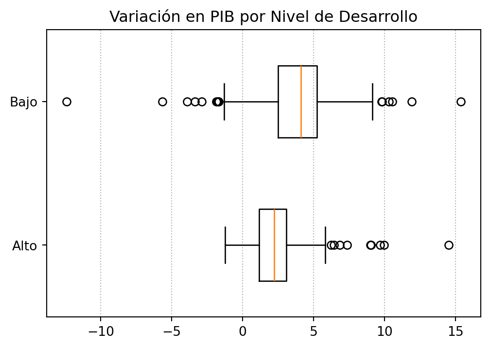
# Visualizar distribuciones con histogramas
plt.figure(figsize = [6,4])
plt.hist(
[vpib_alto, vpib_bajo],
bins = int(np.sqrt(len(vpib_alto))),
density = True,
histtype = "stepfilled",
alpha = 0.5
)
plt.title("Variación en PIB por Nivel de Desarrollo")
plt.ylabel("Densidad")
plt.legend(["Bajo", "Alto"])
plt.show()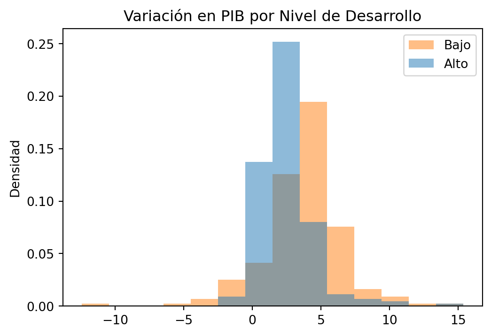
Los resultados aquí alcanzados parecerían indicar que en promedio la variación del PIB en países de bajo desarrollo es mayor a aquella de los países de alto desarrollo.
¿Cómo podemos estar completamente seguros de esta afirmación? La respuesta radica en la inferencia estadística, cuyas técnicas nos permiten verificar hipótesis de forma objetiva y robusta. En el siguiente capítulo aprenderemos cómo hacer este tipo de pruebas.
Por ahora extrae conclusiones relevantes de este análisis descriptivo.
TipConclusiones
| # | Conclusión |
|---|---|
| 1 | Los países de bajo desarrollo tienden a crecer porcentualmente más que los países más desarrollados. Esto en principio podría resultar contraintuitivo pero se explica por el hecho de que incrementar 1 punto porcentual de una base menor es, por decirlo de alguna manera, “más sencillo” que hacerlo de una base mayor. Aquí un ejemplo puramente ilustrativo: Sea USD 100 M el PIB de un país de bajo desarrollo en un año cualquiera, y USD 1,000 M el de un país de alto desarrollo. Incrementar 1% para el primer caso implica una variación absoluta de apenas USD 1 millón, mientras que para el segundo sería USD 10 millones. ¡Mucho más! |
NotaPara seguir aprendiendo estadística
Como has podido evidenciar, saber estadística te ayudará mucho en tu camino como analista o científico de datos. Te recomiendo por tanto que escuches y mires esta lista de reproducción sobre Fundamentos de Estadística creada por el canal StatQuest de Josh Starmer. Siéntete libre de seguir este canal para que puedas estar al tanto de todo su contenido.
Ejercicios de práctica
En estos ejercicios se busca aplicar los conocimientos adquiridos de programación en Python para profundizar en tres conceptos de estadística extremadamente útiles para el EDA y, posteriormente, para el desarrollo de modelos predictivos:
- La Ley de los grandes números, que nos ayudará a entender mejor por qué se busca contar con la mayor cantidad de datos posibles cuando hacemos análisis estadístico.
- El Teorema del límite central, que nos muestra cómo la distribución normal surge de forma natural en las aplicaciones y cálculos vinculados a la ciencia de datos.
- El Teorema de Bayes, que fundamenta la lógica asociada a la importancia de nueva información y cómo este criterio puede ayudarnos a pronosticar eventos futuros.
Intenta resolver cada ejercicio por tu cuenta antes de desplegar la solución.
Ley de los grandes números
La Ley de los grandes números, establecida empíricamente por Cardano (1550) y demostrada formalmente por Jakob Bernoulli (1713), especifica que el estadístico \(\bar\theta\) de una muestra de tamaño \(n\) extraída de una población cualquiera, convergerá hacia el estadístico poblacional \(\theta\) a medida que \(n\) aumenta. En términos matemáticos, si recuerdas algo de límites, esta definición sería así:
\[ \lim_{n\rightarrow \infty} \bar\theta = \theta \]
Consideremos por ejemplo al estadístico media: lo que nos dice esta ley es que el promedio de una parte (muestra) de un conjunto de datos (población), será similar al promedio de todo el conjunto siempre que esa parte sea suficientemente grande.
Vamos a probar esto con nuestros conocimientos de Python.
Ejercicio 1
Importa las librerías random, numpy, pandas y matplotlib.
NotaSolución
import random
import numpy as np
import pandas as pd
import matplotlib.pyplot as pltGenera una lista con 2,000 valores aleatorios que sigan una distribución lognormal replicando el siguiente código (la semilla 123 hace que tus resultados sean reproducibles):
rng = np.random.default_rng(123)
poblacion = [rng.lognormal() for i in range(2000)]Esta colección de valores será nuestra población.
NotaSolución
random.seed(123)
rng = np.random.default_rng(123)
poblacion = [rng.lognormal() for i in range(2000)]Calcula la media de esta población y guarda el resultado en la variable prom_poblacion.
NotaSolución
prom_poblacion = np.mean(poblacion)
print(f"Media de la población: {prom_poblacion:.3f}")Media de la población: 1.658Extrae una muestra aleatoria de tamaño 5 de tu población utilizando la función sample de la librería random. Guarda tu resultado en la variable muestra.
NotaSolución
muestra = random.sample(poblacion, 5)
print(muestra)[9.636139868659237, 2.567714500083468, 0.8268927344656016, 0.738770301398725, 1.1472735217327743]Calcula el promedio de esta muestra y guárdalo en una variable prom_muestra.
NotaSolución
prom_muestra = np.mean(muestra)
print(f"Media de la muestra: {prom_muestra:.3f}")Media de la muestra: 2.983Es posible que el promedio de la muestra obtenido no sea tan parecido al de la población. No te preocupes, usaremos la lógica de la ley de los grandes números para mejorar esta aproximación.
Ejercicio 2
Crea una lista prom_lista que contenga cálculos del promedio de muestras de forma equivalente al realizado en el ejercicio anterior. Solamente que ahora considera como tamaño de las muestras valores que inicien en 5 y terminen en 1,900, con saltos de 5 unidades (es decir, 5, 10, 15, 20, 25, …, 995, 1000, …, 1895, 1900).
NotaSolución
prom_lista = []
for n in range(5, 1905, 5):
muestra = random.sample(poblacion, n)
prom_lista.append(np.mean(muestra))Crea un dataframe que contenga dos columnas:
- La primera debe especificar los tamaños de muestra que utilizaste en el código anterior.
- La segunda debe especificar los valores guardados en tu lista de promedios.
NotaSolución
df_promedios = pd.DataFrame(dict(
n = range(5, 1905, 5),
promedio = prom_lista
))
df_promedios.sample(10, random_state = 123)| n | promedio | |
|---|---|---|
| 236 | 1185 | 1.724964 |
| 218 | 1095 | 1.588763 |
| 296 | 1485 | 1.683848 |
| 142 | 715 | 1.645451 |
| 242 | 1215 | 1.661632 |
| 178 | 895 | 1.662401 |
| 160 | 805 | 1.696116 |
| 200 | 1005 | 1.631336 |
| 287 | 1440 | 1.643637 |
| 177 | 890 | 1.694489 |
Grafica de forma simple la evolución de los promedios obtenidos a medida que se incrementa el tamaño de la muestra. Incluye una línea horizontal en color rojo que muestre el promedio de la población.
NotaSolución
df_promedios.plot(
x = "n",
y = "promedio",
legend = None,
figsize = [10,4],
color = "dodgerblue"
)
plt.axhline(y = prom_poblacion, color = "red", linestyle = ":")
plt.show()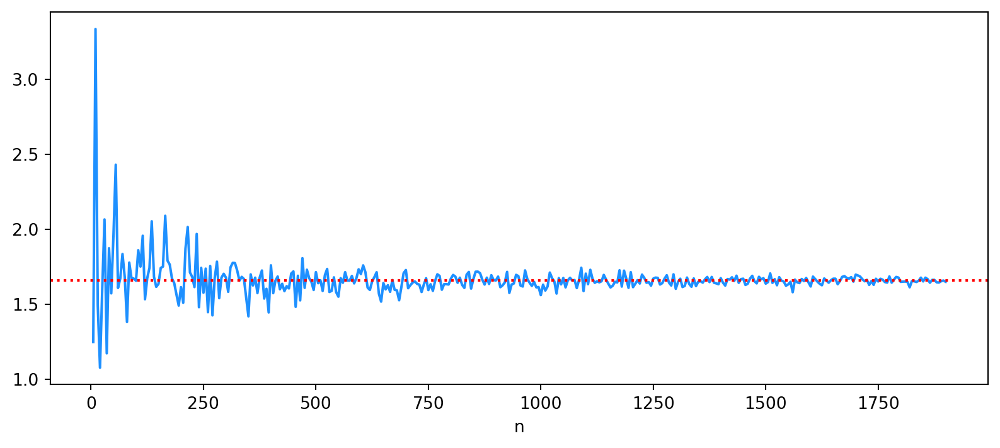
Si todo fue hecho correctamente hasta ahora, deberías evidenciar que el promedio de las muestras converge hacia el promedio de la población a medida que el tamaño de muestra aumenta. Justamente lo que indica la ley de los grandes números.
Ejercicio 3
Intenta comprobar que esta ley igualmente se cumple para otros estadísticos como la desviación estándar. Puedes utilizar la función np.std para asistirte en tus cálculos.
NotaSolución
# Calcular std de la población
desv_poblacion = np.std(poblacion)
print(f"Desviación de la población: {desv_poblacion:.3f}")Desviación de la población: 1.962# Calcular std para distintos tamaños de muestra
desv_lista = []
for n in range(5, 1905, 5):
muestra = random.sample(poblacion, n)
desv_lista.append(np.std(muestra))
# Crear dataframe con desviaciones muestrales
df_desviaciones = pd.DataFrame(dict(
n = range(5, 1905, 5),
std = desv_lista
))
# Graficar evolución de desviaciones
df_desviaciones.plot(
x = "n",
y = "std",
legend = None,
figsize = [10,4],
color = "dodgerblue"
)
plt.axhline(y = desv_poblacion, color = "red", linestyle = ":")
plt.show()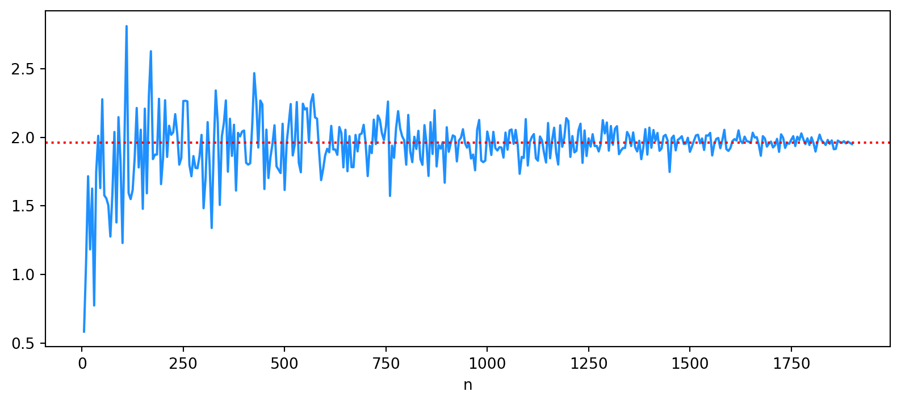
Como puedes observar, la ley de los grandes números es una de las muchas razones por las cuales a los analistas y científicos de datos nos gustan las tablas “grandes” en lo que respecta a cantidad de observaciones. Mientras más datos, se pueden obtener estimaciones más adecuadas y representativas de la realidad.
NotaEstimadores insesgados
La Ley de los grandes números funciona siempre y cuando el estadístico muestral que utilicemos sea insesgado. Un estimador es insesgado si su valor esperado es igual a aquel de la variable, esto es:
\[ \mathbb E\left(\,\bar\theta\, \right) = \mathbb E(X)\]
donde \(X\) representa la variable en cuestión.
A continuación podrás ver la demostración que justamente confirma que la media aritmética es un estimador insesgado:
\[ \mathbb E\left(\,\bar X \, \right) = \mathbb E\left(\,\frac{\sum_{i=1}^{n} x_i}{n} \, \right)\] \[ = \frac{1}{n}\mathbb E\left(\,\sum_{i=1}^{n} x_i\, \right) = \frac{1}{n} \sum_{i=1}^{n} \mathbb E\left(x_i\right) \] \[ = \frac{1}{n} \sum_{i=1}^{n} \mathbb E(X) = \frac{n}{n} \mathbb E(X) = \mathbb E(X) \]
Te sugiero que la investigues a detalle para que comprendas cómo se operan con valores esperados.
Teorema del límite central
El Teorema del límite central se constituye en una herramienta fundamental de todo análisis basado en estadística, pues especifica que la distribución del promedio de una muestra aleatoria extraída de una población, tenderá a ser Normal a medida que el tamaño de muestra \(n\) se incrementa. Además esta distribución tendrá los siguientes parámetros:
- Centralidad en la media de la población.
- Error estándar \(s = \sigma/\sqrt{n}\), donde \(\sigma\) corresponde a la desviación estándar poblacional.
En términos más simples aunque no tan precisos, este teorema nos dice que el promedio de cualquier variable sigue una distribución en forma de campana si se cuenta con la suficiente cantidad de observaciones.
El teorema fue planteado ya en 1733 por de Moivre, con las primeras formalizaciones a principios del siglo XIX gracias a las investigaciones de Laplace y Gauss. Su demostración más moderna y formal llegaría un siglo más tarde gracias al trabajo de Lyapunov. Vamos ahora a verificarlo con nuestros conocimientos de Python.
Ejercicio 1
Simula el lanzamiento de un dado común utilizando la función randint de la librería random. Por si necesitas saberlo, un dado común es aquel que tiene 6 caras y que al lanzarlo cada cara tiene igual probabilidad de salir, esto es, una entre seis posibilidades.
NotaSolución
random.randint(1, 6)6Imagina ahora que lanzas el dado 50 veces. Guarda los resultados obtenidos en una lista llamada lanzamientos.
NotaSolución
lanzamientos = [random.randint(1, 6) for i in range(50)]
print(lanzamientos)[6, 5, 6, 4, 1, 3, 1, 2, 2, 1, 2, 4, 6, 3, 2, 3, 3, 3, 5, 3, 2, 6, 2, 4, 3, 2, 1, 6, 3, 1, 6, 2, 3, 6, 5, 6, 1, 4, 5, 1, 5, 1, 5, 3, 2, 5, 2, 5, 4, 2]Calcula el promedio de tus lanzamientos y guarda el resultado en la variable prom_lanzamientos.
NotaSolución
prom_lanzamientos = np.mean(lanzamientos)
print(f"Promedio de lanzamientos de dado: {prom_lanzamientos}")Promedio de lanzamientos de dado: 3.36Si has hecho todo bien hasta ahora, el promedio obtenido debería ser un valor cercano a \(3.5\). ¿Podrías intuir por qué este valor?
Ejercicio 2
Repite 10 veces este experimento de lanzar 50 dados. Guarda el promedio de cada una de estas iteraciones en una variable llamada promedios.
NOTA: Vale señalar que para efectos de asimilar lo solicitado con la definición del Teorema del límite central, nuestro tamaño de muestra \(n\) sería 10.
NotaSolución
promedios = []
for i in range(10):
lanzamientos = [random.randint(1, 6) for i in range(50)]
prom_lanzamientos = float(np.mean(lanzamientos))
promedios.append(prom_lanzamientos)
print(promedios)[3.96, 3.28, 3.26, 3.54, 3.52, 3.36, 3.2, 3.86, 3.44, 3.5]Grafica estos resultados en un histograma simple que tenga aproximadamente \(\sqrt{n}\) barras. Recuerda que en este caso \(n\) sería 10.
NotaSolución
plt.figure(figsize = [6,4])
plt.hist(
promedios,
bins = int(np.sqrt(10)),
color = "dodgerblue",
alpha = 0.5
)
plt.grid(linestyle = ":")
plt.show()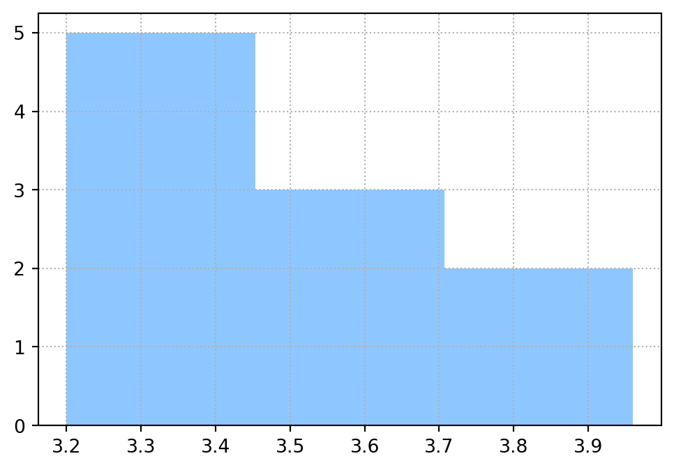
El gráfico no parece sugerir que este promedio siga una distribución Normal. No te preocupes, vamos a llegar a ello con el Teorema del límite central.
Ejercicio 3
Define la función tlc que automatice el proceso del ejercicio anterior, tomando como entrada un valor de lanzamientos \(n\) y devolviendo un histograma con aproximadamente \(\sqrt{n}\) barras.
NotaSolución
def tlc(n):
# Iterar n veces
promedios = []
for i in range(n):
lanzamientos = [random.randint(1, 6) for i in range(50)]
prom_lanzamientos = np.mean(lanzamientos)
promedios.append(prom_lanzamientos)
# Histograma de las iteraciones
plt.figure(figsize = [6,4])
plt.hist(
promedios,
bins = int(np.sqrt(n)),
color = "dodgerblue",
alpha = 0.5
)
plt.grid(linestyle = ":")
plt.show()Utiliza tu función tlc para ver la distribución resultante en un tamaño de muestra \(n\) de 100.
NotaSolución
tlc(100)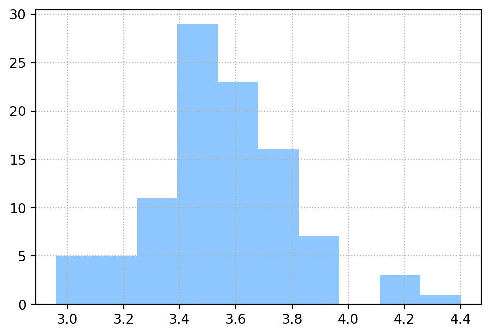
Repite el ejercicio con tamaños de muestra de 1,000 y 10,000.
NotaSolución
# Histograma con 1,000 experimentos
tlc(1000)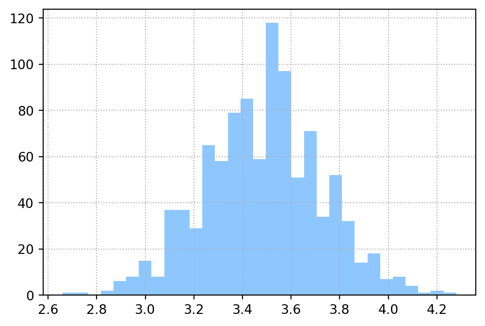
# Histograma con 10,000 experimentos
tlc(10000)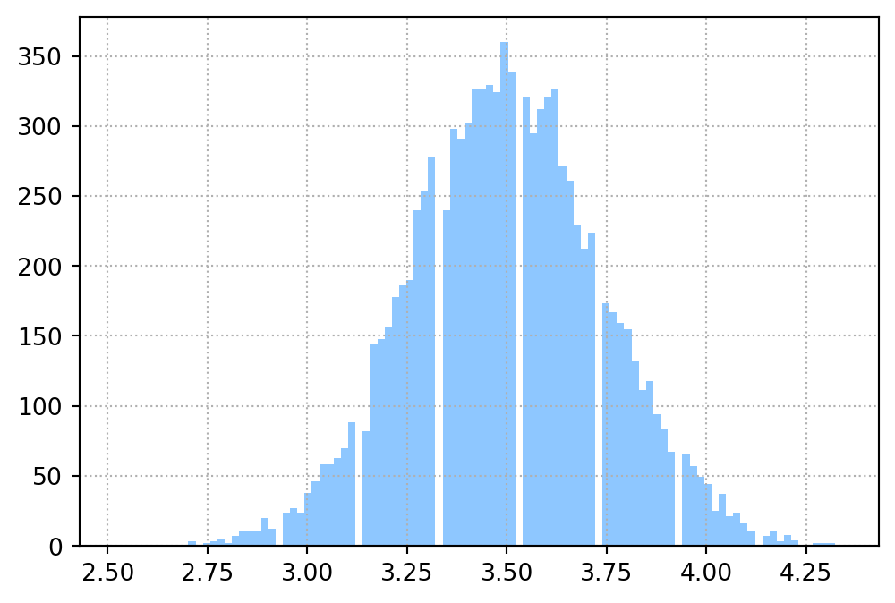
Si todo se ha hecho correctamente, notarás que los últimos histogramas tienen una forma muy familiar: la de una distribución Normal. Justamente aquella predicha por el Teorema del límite central.
Nota¿Para qué sirve el Teorema del límite central?
Seguramente te preguntarás cuál es la utilidad de este resultado en tu aprendizaje de ciencia de datos. Aquí algunas respuestas:
- En inferencia estadística, que verás en el siguiente capítulo, la existencia y decisión de uso de algunas pruebas de hipótesis (como las asociadas a medias), dependen exclusivamente de que se cumpla esta proposición. Es por este motivo que cuando el tamaño de muestra es pequeño, se sugiere el uso del test U de Mann-Whitney; no así cuando el tamaño de muestra es grande donde se recomiendan las pruebas t que asumen que las medias siguen una distribución simétrica en forma de campana tal y como hace referencia este teorema.
- La confiabilidad y robustez de muchos algoritmos que se utilizan en el modelamiento predictivo y aprendizaje computacional necesitan que las variables a predecir sigan una distribución normal. Por tanto, la agregación a valores promedio puede garantizar el cumplimiento de este requerimiento en específico.
- Pero ante todo, la distribución normal es bastante conocida y documentada, por lo que mantener variables que sigan esta distribución facilita su estudio y comprensión. No sucedería lo mismo si el comportamiento observado tuviera propiedades menos “naturales” que exigirían mayor complejidad en nuestros análisis.
Teorema de Bayes
La existencia de información adicional se constituye en un factor determinante para la actualización de nuestras creencias previas respecto a un evento en particular. Por tanto, el contar con nueva evidencia sobre el cumplimiento de un suceso se traduce en tomar decisiones específicas basadas en nuestra observación y una adaptación más adecuada al entorno en que nos estamos desenvolviendo.
Esta proposición lógica tiene su representación dentro de la teoría de probabilidades a través del Teorema de Bayes. El mismo afirma que dados dos eventos \(A\) y \(B\) cualesquiera, se cumple que
\[ P(A \mid B) = \frac{P(B \mid A) P(A)}{P(B)} \]
donde \(P(A)\) es la probabilidad previa que conocemos del evento \(A\), y \(P(A \mid B)\) es la probabilidad posterior o ajustada dada la observación del suceso \(B\).
Veamos cómo podemos aplicar esta idea tan simple para construir un modelo de pronóstico de spam en correos electrónicos.
Ejercicio 1
De un artículo publicado en un recorte de prensa se conoce que el 28.5% de los correos electrónicos que recibe una persona cualquiera son spam. Allí también se indica que una característica distintiva de esos mensajes maliciosos es que en su contenido aparece mucho la palabra “Gratis”; de hecho el 82.2% de ellos la tiene.
Por otra parte, revisando una muestra de 45 correos recibidos que NO son spam, tú has podido evidenciar que 5 presentan dicho término en su contenido.
Definamos por tanto al evento \(A\) como el que un correo sea Spam, y a \(B\) como que aparezca la palabra “Gratis”. Guarda las probabilidades descritas aquí en las variables p_s, p_g_s y p_g_nos respectivamente.
NotaSolución
p_s = 0.285
p_g_s = 0.822
p_g_nos = 5/45
print(f"P(Spam): {p_s:.1%}")
print(f"P(Gratis | Spam): {p_g_s:.1%}")
print(f"P(Gratis | No Spam): {p_g_nos:.1%}")P(Spam): 28.5%
P(Gratis | Spam): 82.2%
P(Gratis | No Spam): 11.1%Dado esto, calcula la probabilidad de que un correo cualquiera contenga la palabra “Gratis”. Considera para esto que
\[ P(Gratis) = P(Gratis \mid Spam)P(Spam) + P(Gratis \mid No\_Spam)P(No\_Spam) \]
NotaSolución
p_g = p_g_s * p_s + p_g_nos * (1 - p_s)
print(f"P(Gratis): {p_g:.1%}")P(Gratis): 31.4%Supongamos que recibimos un nuevo correo electrónico que en su contenido tiene la palabra “Gratis”. Ante esta nueva evidencia, utiliza la definición del Teorema de Bayes para calcular la probabilidad de que dicho correo sea spam.
NotaSolución
p_s_g = p_g_s * p_s / p_g
print(f"P(Spam | Gratis): {p_s_g:.1%}")P(Spam | Gratis): 74.7%Ejercicio 2
Hasta ahora podemos estimar la probabilidad de que un nuevo mensaje recibido sea spam considerando solamente el hecho de que contenga la palabra “Gratis”. Intentemos agregar un nuevo atributo para fortalecer nuestro modelo predictivo.
Revisando nuevamente el artículo, notamos que además se destaca que el 54.3% de los correos maliciosos incorpora algún link. Por lo que decides contrastar esto con los 45 correos normales de nuestra muestra y detectas que apenas 2 de ellos presentan esta característica.
Guarda estas nuevas probabilidades en las variables p_l_s y p_l_nos, respectivamente.
NotaSolución
p_l_s = 0.543
p_l_nos = 2/45
print(f"P(Link | Spam): {p_l_s:.1%}")
print(f"P(Link | No Spam): {p_l_nos:.1%}")P(Link | Spam): 54.3%
P(Link | No Spam): 4.4%Calcula ahora la probabilidad de que un correo cualquiera contenga un link.
NotaSolución
p_l = p_l_s * p_s + p_l_nos * (1 - p_s)
print(f"P(Link): {p_l:.1%}")P(Link): 18.7%Suponiendo un nuevo correo que contiene un link, ¿cuál sería la probabilidad de que el mismo sea spam?
NotaSolución
p_s_l = p_l_s * p_s / p_l
print(f"P(Spam | Link): {p_s_l:.1%}")P(Spam | Link): 83.0%Ejercicio 3
Es momento de combinar esta evidencia: calcula la probabilidad de que un correo cualquiera tenga un link y la palabra “Gratis”. Para ello, puedes asumir que estos dos eventos son condicionalmente independientes dado el tipo de correo tal que
\[ P(Gratis,\,Link \mid Spam) = P(Gratis \mid Spam) P(Link \mid Spam) \]
\[ P(Gratis,\,Link \mid No\_Spam) = P(Gratis \mid No\_Spam) P(Link \mid No\_Spam) \]
NotaSolución
p_gl = p_g_s * p_l_s * p_s + p_g_nos * p_l_nos * (1 - p_s)
print(f"P(Gratis, Link): {p_gl:.1%}")P(Gratis, Link): 13.1%Utiliza este resultado para determinar qué tan probable es que un nuevo correo sea spam, dado que se observa que contiene un link y la palabra “Gratis”.
NotaSolución
p_s_gl = p_g_s * p_l_s * p_s / p_gl
print(f"P(Spam | Gratis, Link): {p_s_gl:.1%}")P(Spam | Gratis, Link): 97.3%¿Qué sucede ahora si el correo presenta solamente un link pero sin la palabra “Gratis”?
NotaSolución
# Calcular probabilidad sin gratis y con link
p_nogl = (1 - p_g_s) * p_l_s * p_s + (1 - p_g_nos) * p_l_nos * (1 - p_s)
# Calcular probabilidad posterior de spam dada evidencia
p_s_nogl = (1 - p_g_s) * p_l_s * p_s / p_nogl
print(f"P(Spam | No Gratis, Link): {p_s_nogl:.1%}")P(Spam | No Gratis, Link): 49.4%Crea una visualización que evidencie las 4 posibles alternativas de evidencia y su correspondiente probabilidad posterior de que el correo sea spam.
NotaSolución
# Calcular probabilidad posterior dado correo con gratis y sin link
p_gnol = p_g_s * (1 - p_l_s) * p_s + p_g_nos * (1 - p_l_nos) * (1 - p_s)
p_s_gnol = p_g_s * (1 - p_l_s) * p_s / p_gnol
print(f"P(Spam | Gratis, No Link): {p_s_gnol:.1%}")P(Spam | Gratis, No Link): 58.5%# Calcular probabilidad posterior dado correo sin gratis y sin link
p_nognol = (1 - p_g_s) * (1 - p_l_s) * p_s + (1 - p_g_nos) * (1 - p_l_nos) * (1 - p_s)
p_s_nognol = (1 - p_g_s) * (1 - p_l_s) * p_s / p_nognol
print(f"P(Spam | No Gratis, No Link): {p_s_nognol:.1%}")P(Spam | No Gratis, No Link): 3.7%# Visualizar resultados de probabilidad posterior
plt.figure(figsize = [6,4])
plt.barh(
y = ["P(S | G, L)", "P(S | No G, L)", "P(S | G, No L)", "P(S | No G, No L)"],
width = [p_s_gl, p_s_nogl, p_s_gnol, p_s_nognol],
color = ["tomato", "dodgerblue", "dodgerblue", "lightgreen"],
alpha = 0.75
)
plt.xticks(ticks = np.array(range(0,11))/10)
plt.grid(axis = "x", linestyle = ":")
plt.show()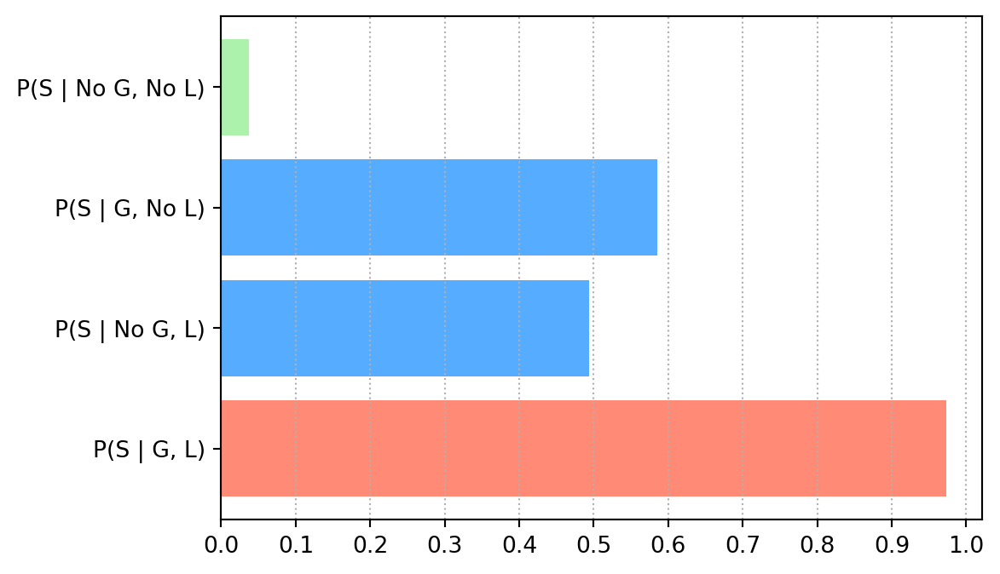
Gracias al Teorema de Bayes has logrado diseñar un modelo de pronóstico completo para organizar tu bandeja de entrada y evitar así nuevo contenido malicioso. Por ejemplo, podrías configurar tu cuenta para que siga estas instrucciones:
- Si en el contenido de cada correo entrante no aparecen la palabra “Gratis” ni links entonces se acepta y pasa a la bandeja de entrada.
- Si en el contenido aparecen ambas características se descarta automáticamente el mensaje por ser un spam.
- Si solamente hay alguna de las dos opciones se pasa a una carpeta de revisión.
NotaClasificador Bayesiano
En este ejercicio de hecho hemos construido una simplificación de un algoritmo de aprendizaje computacional conocido como Clasificador Bayesiano. En este algoritmo únicamente se adiciona un umbral de clasificación para identificar si un correo es o no spam.
Por ejemplo, si se definiese este umbral en 0.5 para nuestro caso, entonces se concluiría que todos los correos que tengan la palabra “Gratis” serán maliciosos independiente de cualquier otra característica que presenten. Si en cambio el umbral se establece en 0.75, solamente se clasificarán así aquellos que presenten la palabra junto con un link.